Panduan Penggunaan BelajarPlus
Pilih jenis akun kamu di bawah ini untuk melihat panduan urut dan terarah sesuai kebutuhan peranmu.
Pendaftaran & Aktivasi Akun BelajarPlus
Registrasi AkunBuka portal belajarplus.id/auth. Antarmuka terbaru BelajarPlus mengusung konsep registrasi satu pintu dengan badge "Satu halaman untuk siswa & guru" — satu akun untuk semua institusi yang dihubungkan ke sekolah setelah berhasil masuk.
- 1. Tab "Daftar" — Pada form switcher di layar, klik tab "Daftar" di sebelah kanan tab "Masuk".
- 2. Nama Lengkap — Ketikkan nama lengkap aslimu sesuai dengan buku rapor atau data Dapodik sekolah (contoh: Budi Santoso).
- 3. Alamat Email Aktif — Masukkan alamat email aktif milikmu (contoh: anda@sekolah.sch.id atau Gmail pribadi) untuk menerima email aktivasi.
- 4. Kata Sandi (Password) — Buat kata sandi akunmu. Sistem secara otomatis memvalidasi 5 kriteria kekuatan keamanan:
- Minimal 8 karakter
- Ada huruf (a–z)
- Ada angka (0–9)
- Ada huruf kapital (opsional, memperkuat kata sandi)
- Ada simbol seperti
! @ #(opsional, memperkuat kata sandi)
- 5. Verifikasi Kata Sandi — Ketik ulang kata sandi yang sama persis pada kolom "Ulangi kata sandi".
- 6. Centang "Tampilkan Password" — Gunakan centang ini untuk memastikan karakter yang kamu ketik sudah benar dan bebas dari salah ketik.
- 7. Klik Tombol "Daftar" & Verifikasi Email — Tekan tombol biru "Daftar". Sistem akan langsung mengirimkan email aktivasi. Buka kotak masuk (Inbox atau folder Spam/Promosi) emailmu lalu klik tautan verifikasi agar akun aktif sepenuhnya.
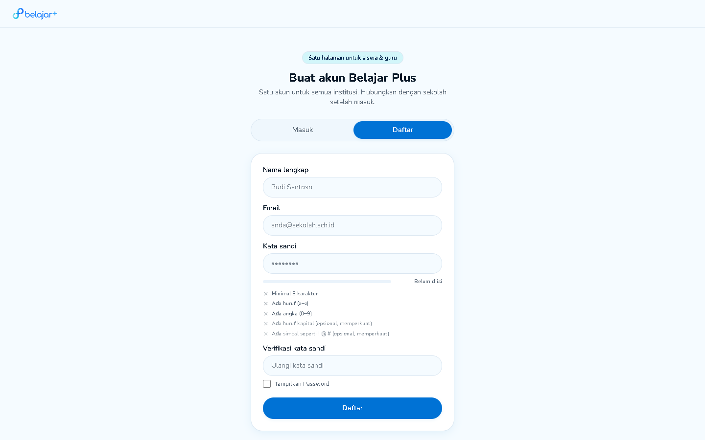
Login ke Akun Siswa & Pemulihan Kata Sandi
Masuk AplikasiSetelah akun terdaftar dan email terverifikasi, buka belajarplus.id/auth pada tab "Masuk". Formulir login terbaru dilengkapi fitur kenyamanan visual:
- Alamat Email: Ketikkan email terdaftar persis tanpa spasi di awal atau akhir.
- Kata Sandi: Masukkan password akunmu (sensitif huruf besar dan kecil).
- Tampilkan Password: Centang opsi "Tampilkan Password" untuk mengecek ketepatan pengetikan karakter agar terhindar dari salah ketik.
Klik tautan "Lupa kata sandi?" tepat di bawah tombol Masuk. Layar modal reset akan terbuka — masukkan alamat email terdaftar, lalu klik tombol kirim. Sistem akan mengirimkan link pemulihan ke inbox emailmu (berlaku selama 15 menit). Periksa folder Spam/Junk jika pesan tidak muncul di kotak masuk utama.

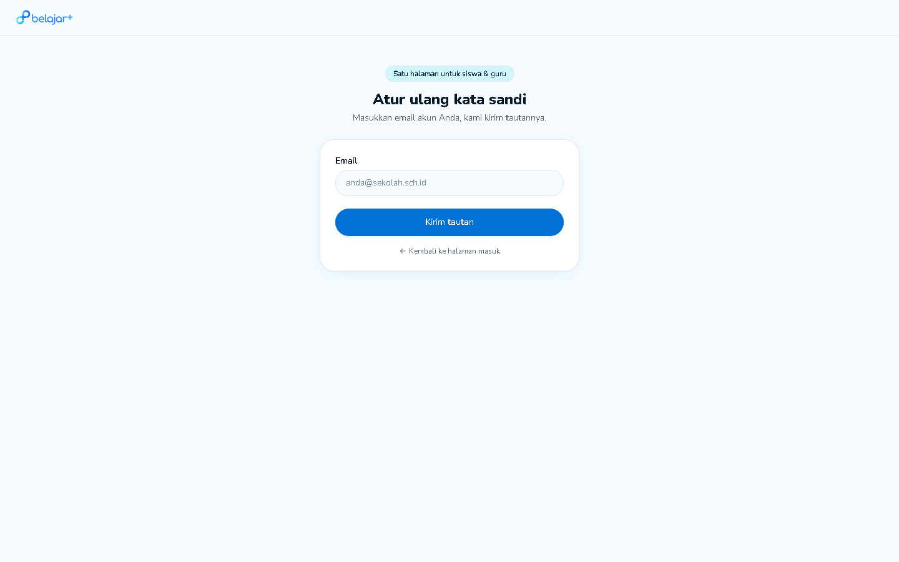
Pemilihan Institusi, Dashboard & Pusat Informasi Sekolah
Pusat KendaliPada pembaruan arsitektur sistem BelajarPlus terbaru, siswa yang terdaftar di satu atau lebih sekolah mitra akan diarahkan terlebih dahulu ke layar "Pilih institusi untuk melanjutkan":
- 1. Layar Pilih Institusi — Pilih sekolah atau institusi tujuanmu (contoh: Belajar Plus · Siswa atau SMA Mitra), lalu klik tombol "Masuk".
- 2. Switcher Institusi di Header — Kamu tidak perlu logout untuk berpindah instansi! Klik tombol "Institusi aktif" di bilah header atas kapan saja untuk mengganti sekolah atau peran.
- 3. Navigasi Sidebar Terpadu & Grup "Informasi Sekolah" — Menu sidebar kiri kini memuat:
- Beranda: Pusat ringkasan pembelajaran aktif.
- Pengumuman (Warta Resmi): Siaran informasi resmi sekolah yang terbagi dalam tab Semua, Belum Dibaca, dan Disematkan lengkap dengan badge notifikasi warta baru dan tautan unduh lampiran materi.
- Komunitas (Diskusi Kolaboratif): Ruang interaksi, forum tanya jawab pelajaran, dan berbagi wawasan antarwarga sekolah dengan dukungan reaksi emoji.
- Agenda (Kalender Terpadu): Kalender akademik bulanan untuk memantau jadwal ulangan harian, batas pengumpulan tugas (deadline), serta agenda kegiatan sekolah.
- Perpustakaan, Koleksi Saya, Toko, & Pesanan: Layanan terpadu e-library dan transaksi buku digital.
- 4. 4 Kartu Statistik Cepat di Beranda — Pantau ringkasan kegiatan secara live:
- Kelas Saya: Jumlah rombel aktif yang sedang kamu ikuti.
- Buku Saya: Jumlah buku digital siap baca yang dipinjam.
- Tugas Aktif: Jumlah kewajiban tugas/ujian dari bapak/ibu guru.
- Hasil Terbaru: Skor evaluasi pengerjaan LJD terkini.


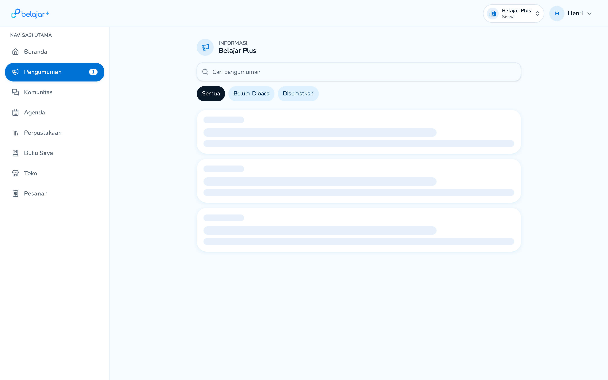
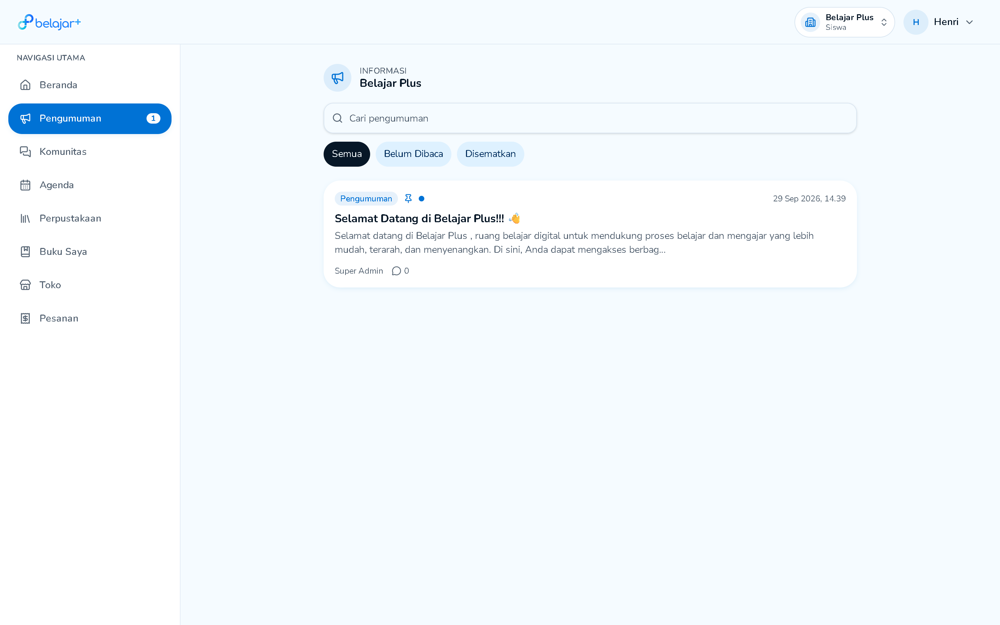
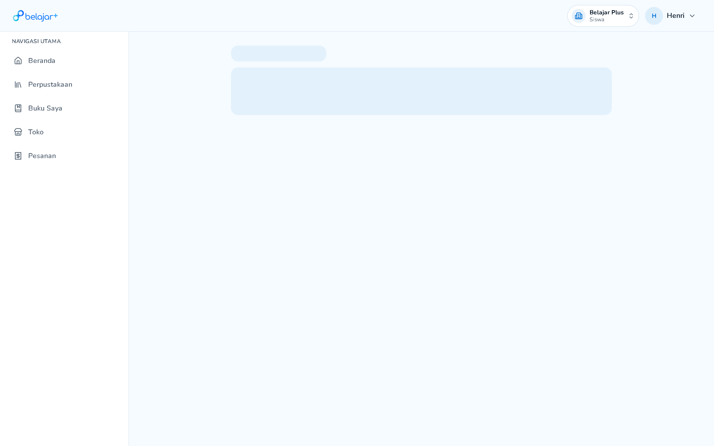
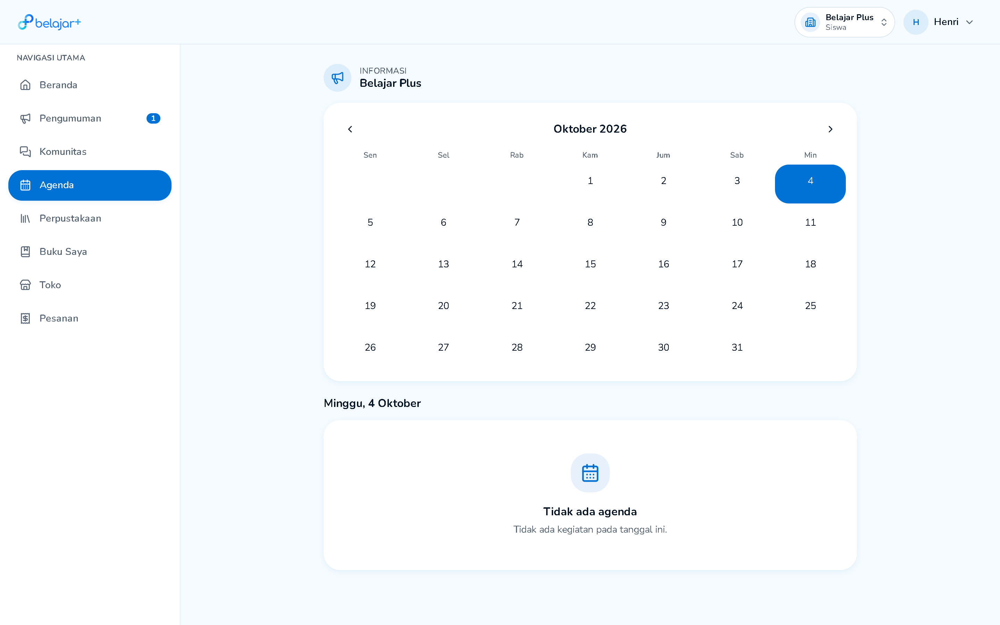
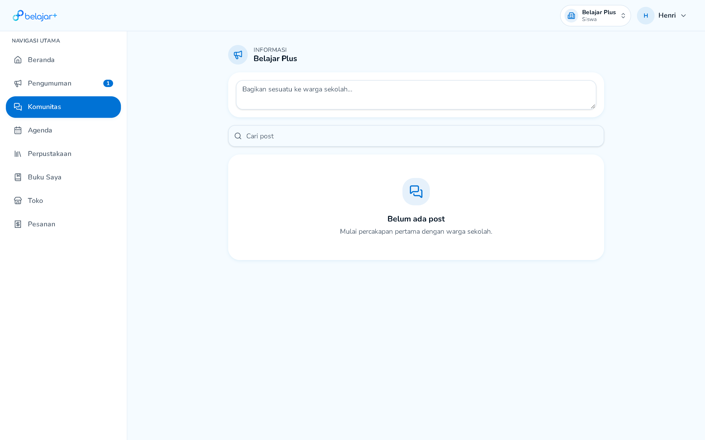
Tugas dari Guru & Pemantauan Tenggat Waktu
Penugasan AktifBagian Tugas dari guru di dashboard menyajikan daftar kegiatan terstruktur yang wajib kamu kerjakan. Desain kartu tugas terbaru menampilkan detail yang sangat spesifik:
- Judul & Bab Pembahasan: Contoh: "Kerjakan asesmen formatif bab 1 · Demo - Biologi 11".
- Indikator Progress Kegiatan: Menampilkan rasio pengerjaan (contoh:
0/1 kegiatan). - Peringatan Tenggat: Ditandai dengan warna merah tegas jika lewat tenggat waktu (contoh: "Lewat tenggat 21 Agu 2026") atau tanggal batas pengumpulan.
- Tombol Aksi Cepat ("Baca" / "Kerjakan"): Klik langsung untuk membuka bahan bacaan penugasan atau meluncurkan lembar kuis LJD.
- Tautan "Lihat semua tugas": Membuka rekapitulasi seluruh arsip penugasan semester aktif.
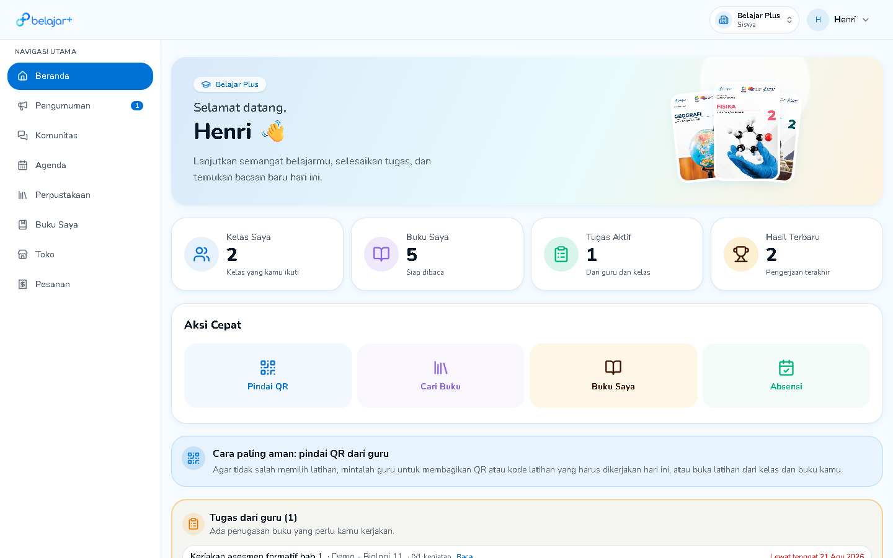
Ruang Kelas E-Learning & Manajemen Kelas Saya (Bedah Tuntas 5 Tab + Anggota)
E-Learning & Kelas SayaBagian Kelas saya menghubungkan akunmu dengan bapak/ibu guru pengampu mata pelajaran dalam ruang belajar digital interaktif. Siswa memiliki kendali penuh mulai dari bergabung mandiri, menjelajahi materi & aktivitas belajar, membaca buku rujukan, hingga opsi keluar mandiri:
-
1. Input Kode Kelas Unik & Tombol "Gabung" — Ketikkan 6 digit kode kelas unik dari bapak/ibu guru (contoh:
BLJ-XXXXXX) pada kolom isian di card Kelas saya, lalu tekan tombol biru "Gabung". Kartu rombel baru akan seketika muncul di dashboard dengan nama mata pelajaran dan nama guru pengampu. - 2. Header & Identitas Ruang Kelas Digital — Saat mengeklik "Masuk Kelas", kamu akan masuk ke halaman ruang kelas interaktif yang menampilkan: nama mata pelajaran resmi, rombel kelas, nama bapak/ibu guru pengampu, deskripsi instruksional, serta indikator persentase capaian belajar kelas.
-
3. Eksplorasi Mendalam 5 Tab Pembelajaran E-Learning:
- Tab 1 — Ringkasan: Pusat statistik kelas yang menampilkan 5 kartu metrik: Sumber Belajar Terhubung, Tugas untuk Anda, Aktivitas Dikerjakan (rasio progres), Rata-rata Nilai, dan Progress Belajar (%).
- Tab 2 — Aktivitas Belajar: Pusat kegiatan e-learning terstruktur per bab/topik. Di sini guru menyematkan modul pembelajaran interaktif, materi ringkasan, alur bacaan wajib, dan petunjuk belajar mandiri yang dapat langsung dikerjakan siswa.
- Tab 3 — Sumber Belajar: Buku teks pelajaran Kurikulum Merdeka atau modul pengayaan resmi yang ditautkan guru dari perpustakaan digital sekolah. Siswa dapat langsung meminjam dan membaca e-book rujukan bab per bab tanpa perlu mengunduh file bajakan.
- Tab 4 — Penugasan: Daftar asesmen formatif, sumatif tengah semester (STS), sumatif akhir semester (SAS), dan tryout LJD. Dilengkapi status pengerjaan (Belum Dikerjakan, Sedang Berjalan, Selesai), batas tenggat waktu, dan tombol langsung luncurkan ujian.
- Tab 5 — Hasil Belajar: Transkrip nilai personal siswa di kelas bersangkutan. Menyajikan rincian skor tugas, persentase ketercapaian KKM sekolah, serta analisis kompetensi dasar (KD) untuk evaluasi mandiri.
- Tab 6 — Anggota: Menampilkan daftar seluruh teman sekelas dalam satu rombel dan guru pengampu yang terverifikasi resmi oleh sekolah.
- 4. Fitur Opsi "Keluar" Kelas Mandiri — Di samping tombol Masuk Kelas, terdapat tombol merah "Keluar" yang memunculkan pop-up dialog konfirmasi. Jika kamu tidak sengaja salah memasukkan kode kelas atau berpindah rombel belajar, kamu dapat keluar sendiri secara mandiri tanpa harus merepotkan bapak/ibu guru untuk menghapus akunmu.
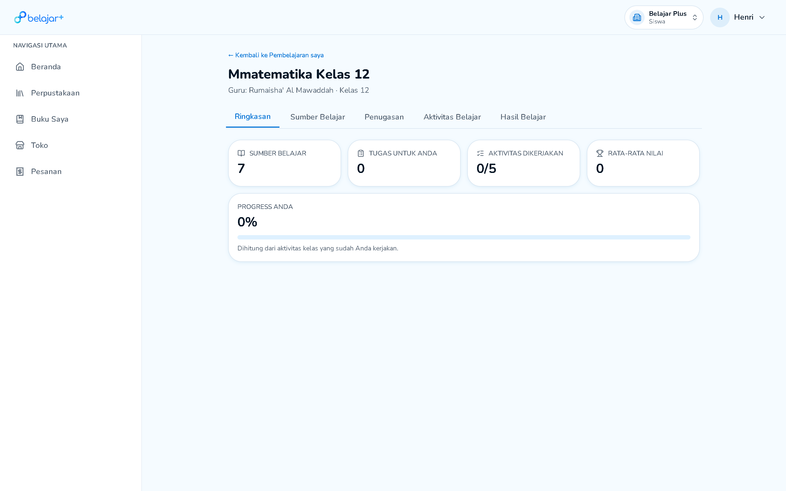
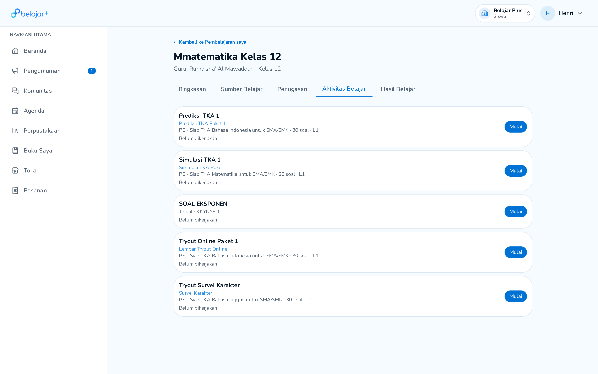
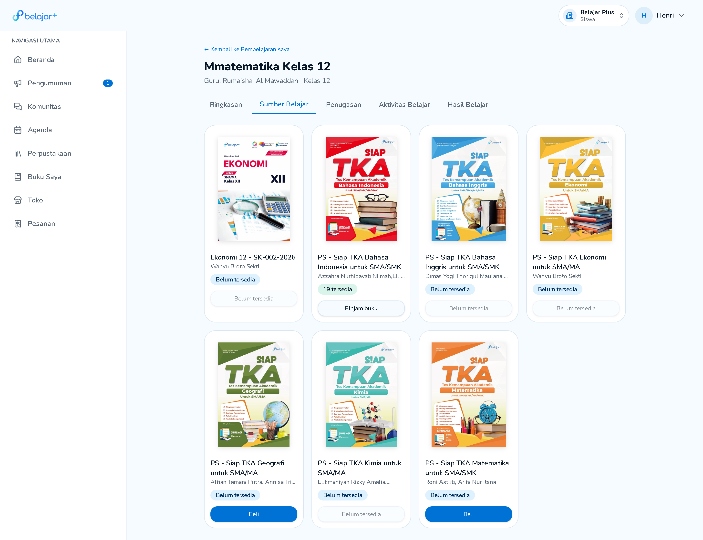
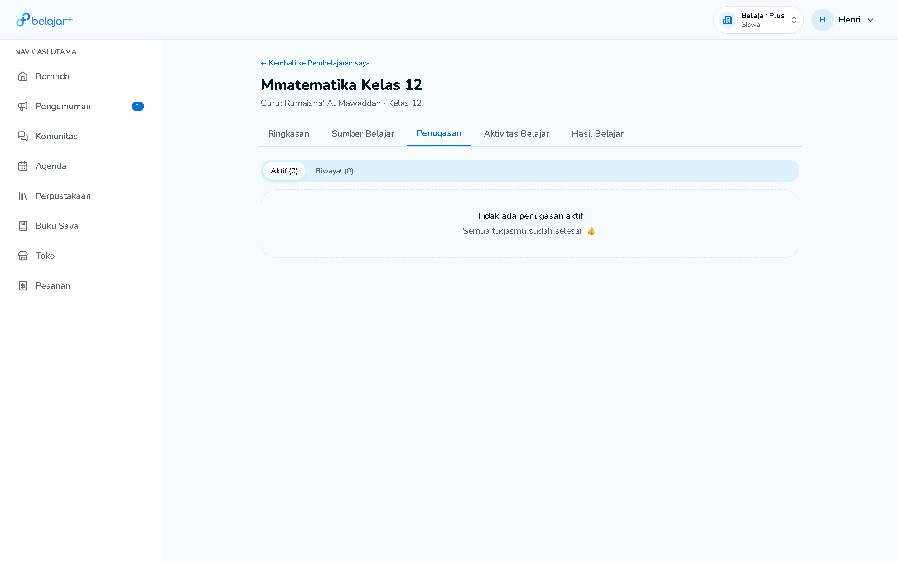

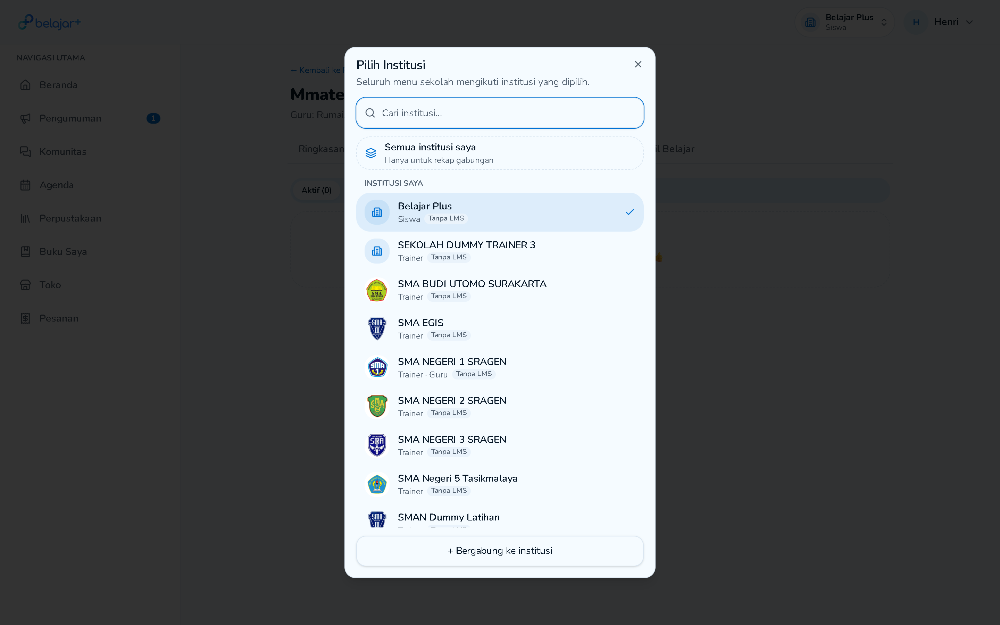
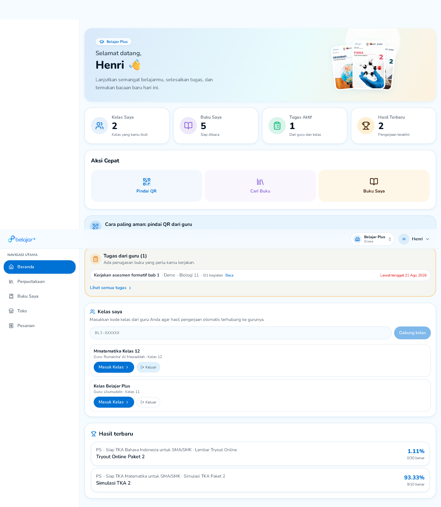
Aksi Cepat, Pindai QR, Presensi Wajah (Face Check-in) & Hasil Belajar
Fitur Cepat & Presensi DigitalBelajarPlus menghadirkan baris Aksi Cepat di dashboard utama, pemindai QR cerdas, serta modul presensi digital mandiri berbasis verifikasi wajah dan geolokasi:
- 📷 1. Pindai QR Kamera — Arahkan kamera HP atau webcam laptop ke kode QR pada buku paket atau materi pembelajaran guru untuk langsung membuka modul bacaan dan kuis secara instan tanpa risiko salah pilih paket.
-
⌨️ 2. Fitur "Masukkan Kode Manual" (Solusi Anti-Gagal) — Jika perangkatmu tidak memiliki kamera atau izin akses kamera diblokir browser, gunakan kartu "Masukkan kode manual" di bagian bawah pemindai. Cukup salin tautan atau kode yang tertera di bawah gambar QR buku (format:
https://... atau kode), lalu klik tombol "Buka". -
👤 3. Presensi Wajah Mandiri (Face Verification) & Radius GPS 120m — Fitur presensi canggih BelajarPlus! Siswa melakukan presensi kedatangan mandiri tanpa perlu antre di mesin fingerprint:
- Perimeter GPS 120 Meter: Sistem otomatis memverifikasi bahwa posisimu berada di dalam radius 120m dari gerbang sekolah saat tombol ditekan.
- Kamera Verifikasi Wajah: Izinkan akses kamera browser, posisikan wajahmu di dalam lingkaran panduan oval, lalu tekan tombol "Ambil Foto Presensi".
- Status Kehadiran Instan: Sistem langsung mencatat waktu check-in (Hadir Tepat Waktu atau Terlambat) dan menyimpannya ke buku jurnal absensi wali kelas.
-
⚡ 4. 4 Pintasan Baris Aksi Cepat — Akses fitur harian langsung dari beranda:
- Pindai QR: Membuka kamera pemindai QR code buku fisik atau lembar tugas.
- Cari Buku: Pintasan instan menuju katalog e-library lengkap sekolah.
- Buku Saya: Membuka koleksi buku digital yang sedang aktif dipinjam.
- Absensi: Presensi digital harian siswa yang terhubung langsung ke sekolah mitra.
-
📊 5. Modul "Hasil Terbaru" & Transkrip Evaluasi — Menampilkan rekam jejak pengerjaan ujian LJD secara transparan:
- Nama paket tryout / simulasi (contoh: PS - Siap TKA Matematika SMA/SMK · Simulasi TKA Paket 2).
- Persentase skor ketuntasan (contoh: 93.33%).
- Rasio butir soal yang benar (contoh:
9/10 benar). - Tautan "Lihat semua riwayat hasil" untuk melihat transkrip komprehensif.


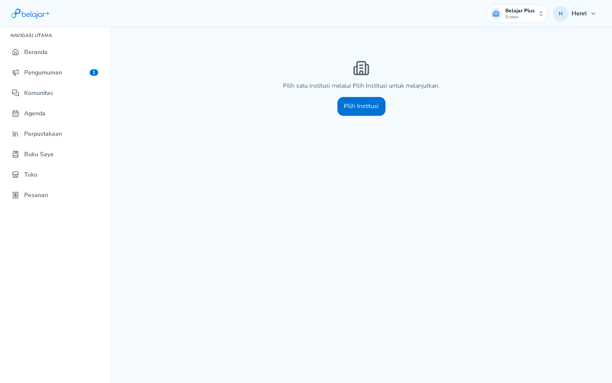

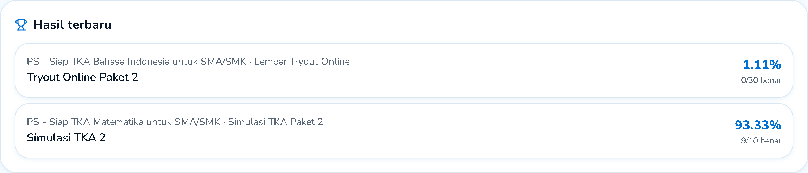
Mencari Buku di Ekosistem Perpustakaan Digital
PerpustakaanMenu Perpustakaan adalah pusat literasi digital sekolahmu. Di sini, ribuan e-book kurikulum resmi Kemendikbudristek dan buku pengayaan penerbit mitra tersedia untuk dipinjam secara gratis (selama kuota lisensi sekolah masih tersedia).
- 1. Tombol Ringkasan "📖 Buku Saya" di Header (Fitur Baru) — Di sudut kanan atas halaman Perpustakaan, terdapat tombol cepat "Buku Saya (X)" yang menampilkan jumlah buku yang sedang kamu pinjam. Tombol ini memudahkanmu memantau kuota pinjaman aktif secara live tanpa perlu bolak-balik ke dashboard.
-
2. Faceted Filter di Sidebar Kiri — Untuk hasil pencarian yang 100% presisi, kombinasikan filter di bilah samping:
- Jenjang & Tingkat Kelas: Pilih tingkatmu (SD, SMP, SMA, SMK — Kelas 1 s.d. Kelas 12).
- Tipe Buku: Saring berdasarkan jenis buku (Teks Utama, Teks Pendamping, atau Non-Teks).
- Kategori & Mata Pelajaran: Pilih rumpun ilmu spesifik (Matematika, Biologi, Sejarah, Informatika, dll).
- Pengurutan: Atur urutan tampilan berdasarkan Terbaru, Populer, atau Judul A-Z.
-
3. Status Stok & Eksemplar Digital — Setiap kartu buku menampilkan kuota real-time (contoh:
Tersedia 15 salinan). Jika kuota habis, tombol akan otomatis berubah menjadi opsi antrean digital. - 4. Tombol "Pinjam Buku" & "Baca Sekarang" — Klik tombol biru "Pinjam Buku" untuk memasukkan judul ke rak Koleksi Saya. Setelah berhasil dipinjam, tombol langsung berganti menjadi "Baca Sekarang" untuk membuka E-Reader.
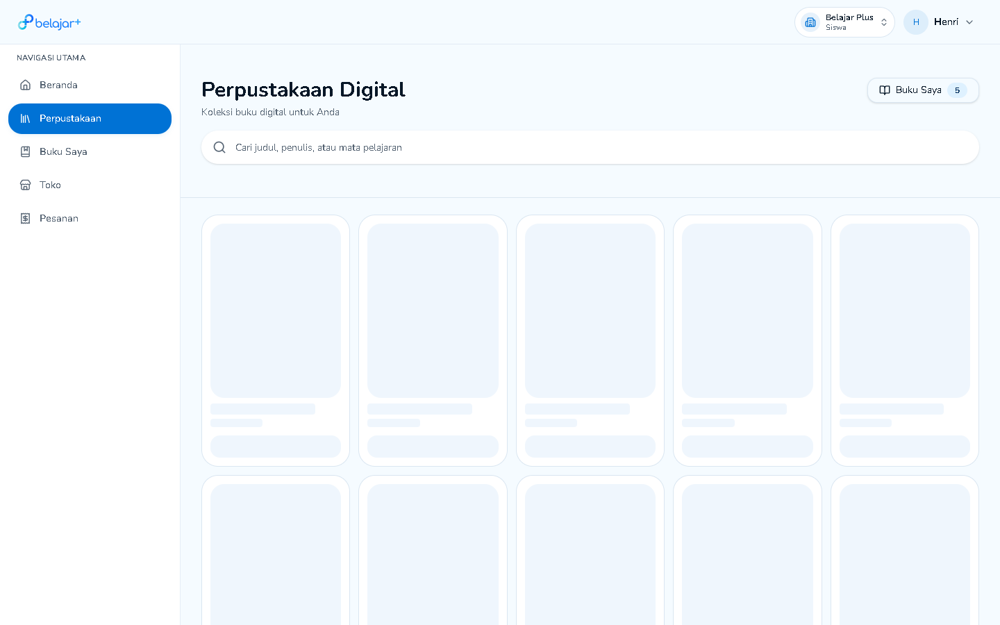
Menavigasi E-Reader & Fitur Interaktif Buku
E-Reader & PengayaanSetelah menemukan buku yang diinginkan di Perpustakaan atau menu Buku Saya, tekan tombol "Baca Buku" untuk membuka antarmuka E-Reader Interaktif BelajarPlus. Di sini kamu tidak hanya membaca teks statis, melainkan dapat berinteraksi langsung dengan materi.
🛠️ Anatomi Toolbar Bawah E-Reader:
- 1. Slider Navigasi & Nomor Halaman (`<`, Slider, `>`, `1 / 98`) — Geser titik slider untuk melompat ratusan halaman secara instan, atau gunakan tombol panah kiri/kanan di layar atau keyboard untuk membaca halaman per halaman.
- 2. ⚙️ Pengaturan (Display Mode) — Kustomisasi kenyamanan membaca mata: mengatur perbesaran (zoom in/out), mode tampilan halaman tunggal (*Single Page*) atau dua halaman bersebelahan layaknya membuka buku cetak fisik (*Two Pages*).
- 3. 📑 Daftar Isi (Table of Contents) — Menampilkan struktur hierarki bab, unit, dan sub-tema materi. Cukup klik judul bab yang diinginkan untuk melompat seketika tanpa perlu scrolling manual.
-
4. ✨ Interaktif (Interactive Activity Hub) — Fitur unggulan pengayaan digital BelajarPlus! Mengklik tombol bintang ini akan membuka jendela pop-up "Konten Interaktif" yang berisi:
- Latihan Soal Per Unit (contoh: Unit 1: Pemahaman Tekstual, Unit 3: Evaluasi dan Apresiasi).
- Tombol "Kerjakan" untuk langsung meluncurkan kuis interaktif tanpa keluar dari buku.
- Tombol "Tandai selesai" untuk mencatat rekam jejak progres mandirimu.
- Modul Simulasi TKA Paket 1 & 2 terintegrasi lengkap dengan kunci dan pembahasan.
- 5. 🔖 Bookmark — Menyematkan penanda halaman favorit atau rumus krusial agar mudah dibuka kembali di sesi belajar berikutnya.
- 6. ✏️ Whiteboard (Papan Coret Digital) — Mengubah lembar buku menjadi kanvas gambar interaktif! Siswa atau guru dapat mencoret, menuliskan coretan rumus matematika, atau memberi highlight warna catatan langsung di atas halaman buku.
🔒 Fitur Toolbar Atas & Sistem Proteksi DRM Anti-Piracy:
- Pencarian Kata Kunci (`🔍`): Ketikkan istilah atau konsep sulit untuk mencari letak pembahasannya di seluruh lembar buku.
- Keamanan Hak Cipta DRM: E-Reader dilengkapi sistem anti-bajak. Jika sistem mendeteksi tangkapan layar (screenshot) atau perekam layar aktif, muncul notifikasi "⚠️ Tangkapan layar terdeteksi. Konten disamarkan." dan teks materi otomatis dikaburkan untuk menjaga hak cipta penerbit.

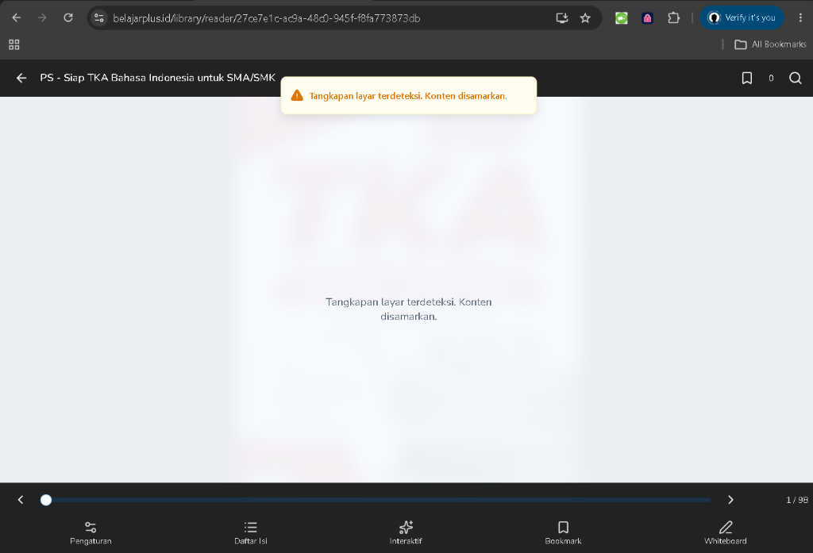
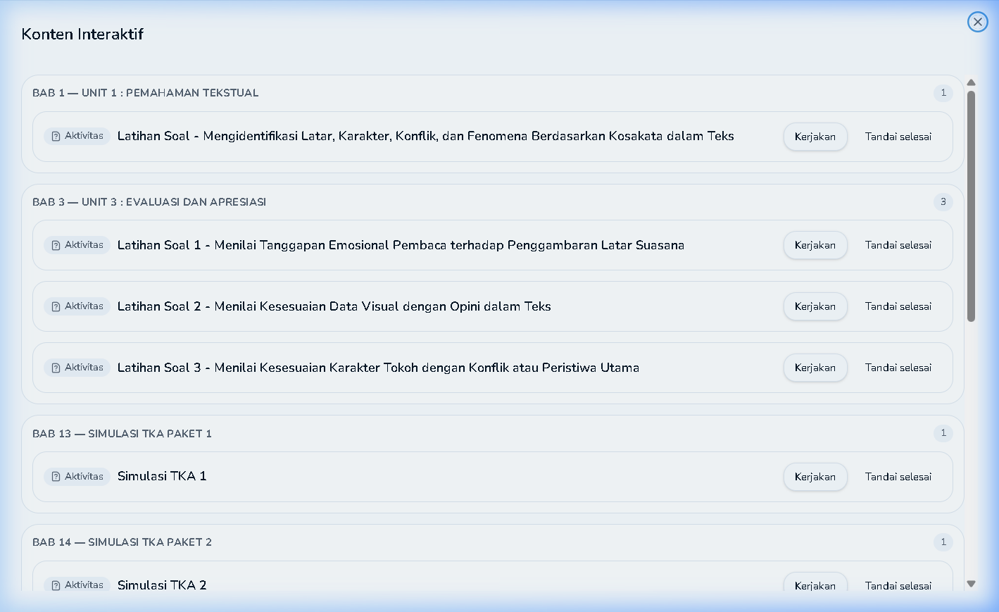
Toolbar bawah E-Reader menyediakan navigasi cepat: Slider Halaman, tombol panah, Pengaturan (zoom & mode 1/2 halaman), Daftar Isi bab, Bookmark penanda halaman, dan Whiteboard untuk coret-coret catatan. E-Reader juga memproteksi konten dengan sistem anti-screenshot DRM (konten otomatis disamarkan jika screenshot terdeteksi).
Klik tombol bintang "Interaktif" pada toolbar bawah untuk membuka modul latihan per bab. Siswa dapat langsung mengklik "Kerjakan" untuk menjawab kuis pemahaman tekstual, evaluasi apresiasi, atau menjalankan Simulasi TKA Paket 1 & 2 tanpa perlu keluar dari buku bacaan. Klik "Tandai selesai" untuk melacak progress belajar mandiri.
Manajemen "Koleksi Saya" (4 Tab, Buku Ditugaskan & Pengembalian)
Koleksi SiswaHalaman Koleksi Saya (sebelumnya bernama Buku Saya) adalah ruang kelola seluruh koleksi buku digital pribadimu. Di bagian atas halaman terpampang 2 indikator cepat: Pinjaman aktif dan Dalam antrean. Antarmuka terbaru kini terbagi menjadi 4 tab kategori terpadu:
- 1. Tab "Milik Saya" — Memuat seluruh buku yang kamu beli secara mandiri melalui Toko BelajarPlus. Buku di tab ini berstatus hak milik pribadi tanpa batasan masa pinjam.
- 2. Tab "Dipinjam" — Menampilkan buku digital yang dipinjam dari perpustakaan sekolah dengan masa aktif (7–14 hari). Setelah jatuh tempo, akses membaca terkunci otomatis agar kuota lisensi kembali ke sekolah.
- 3. Tab "Ditugaskan" (Fitur Baru Unggulan!) — Integrasi langsung dengan guru! Seluruh buku teks, modul suplemen, atau lembar bacaan yang disematkan langsung oleh bapak/ibu guru sebagai rujukan tugas kelas akan otomatis berkumpul di tab ini tanpa perlu kamu cari manual di perpustakaan.
- 4. Tab "Antrean" — Jika kuota eksemplar digital sekolah sedang penuh, buku yang kamu pesan masuk ke daftar tunggu di tab ini. Begitu siswa lain mengembalikan bukunya, sistem otomatis mengaktifkannya ke tab Dipinjam.
- 5. Tombol "Kembalikan" Mandiri — Jika sudah selesai membaca sebelum tanggal jatuh tempo, klik tombol merah "Kembalikan" pada kartu buku untuk melepaskan kuota lisensi bagi teman sekelas yang sedang mengantre.
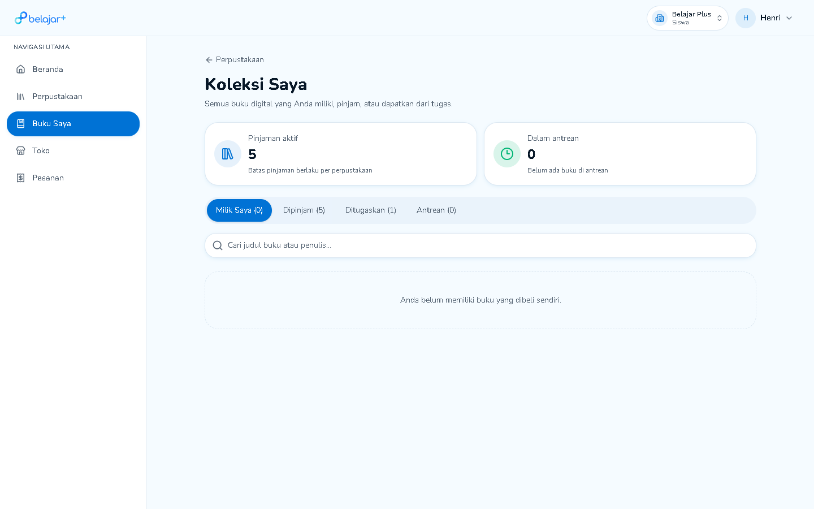
Alur Pengerjaan Tugas, LKPD Interaktif & Ujian Lembar Jawab Digital (LJD)
Penugasan, LKPD & Ujian LJDPengerjaan tugas, lembar kerja (LKPD interaktif), maupun ujian di BelajarPlus menggunakan sistem Lembar Jawab Digital (LJD) berbasis web yang terintegrasi langsung dengan bank soal guru serta sistem pengawas kejujuran otomatis. Ikuti 4 tahap terpadu berikut saat mengerjakan:
2. Pilihan Ganda Kompleks (MCMA): Centang kotak pada semua pilihan yang menurutmu benar (bisa lebih dari satu).
3. Kategori Benar / Salah (PGK): Tentukan status pernyataan dengan mengeklik kolom Benar atau Salah pada setiap baris tabel.
4. Menjodohkan (Matching Items): Pasangkan premis soal di sebelah kiri dengan konsep yang cocok di sebelah kanan via menu dropdown atau tarik garis.
5. Uraian Singkat / Esai: Ketikkan penjelasan konsep secara rinci pada kotak teks editor yang tersedia.
6. Unggah Berkas Tugas (≤ 10 MB): Klik tombol "Pilih Berkas" untuk mengunggah lembar kerja, dokumen praktikum, atau foto laporan (format PDF, Word, JPG, Excel).
- 1. Akses Tugas & Mulai Pengerjaan — Buka menu Kelas Saya, pilih ruang kelas guru yang bersangkutan, lalu buka tab "Penugasan" (atau klik langsung kartu tugas di dashboard). Perhatikan instruksi, batas tenggat waktu, lalu tekan tombol biru "Kerjakan" untuk membuka layar ujian.
-
2. Antarmuka Soal, Stimulus & Pengawas Anti-Cheat — Begitu layar LJD terbuka:
- Header Pengawas: Menampilkan nama siswa, nomor soal aktif (contoh:
Soal 1/30), progress bar (Terjawab X / Total), dan indikator merah Pelanggaran Anti-Cheat (mencatat otomatis jika kamu berpindah tab atau keluar dari layar pengerjaan). - Kartu Soal & Stimulus: Baca teks bacaan, narasi stimulus, tabel, atau grafik. Jika ragu-ragu dengan jawabanmu, klik tombol "🚩 Tandai" di sudut kanan atas kartu soal.
- Memilih Jawaban: Pilih jawaban sesuai tipe soal yang dihadapi. Gunakan tombol "< Sebelumnya" dan "Berikutnya >" untuk berpindah nomor secara teratur.
- Navigator Soal (1–30): Grid nomor soal di bagian bawah memungkinkanmu melompat langsung ke butir nomor mana pun secara instan.
- Header Pengawas: Menampilkan nama siswa, nomor soal aktif (contoh:
-
3. Halaman Tinjau Jawaban Sebelum Submit — Sebelum mengakhiri ujian, klik tombol biru "Ke halaman tinjau" di bawah navigator nomor:
- Sistem otomatis menampilkan rekap peringatan jika masih ada butir kosong: "X soal belum dijawab".
- Status setiap nomor ditampilkan transparan: tanda strip (
—) jika belum diisi, atau tanda centang/simbol jika sudah terisi. - Ketuk nomor apa pun pada daftar untuk langsung kembali dan memperbaiki jawaban sebelum menekan kirim akhir.
-
4. Pengumpulan Lembar Jawaban, Skor Instan & Analisis Kompetensi — Tekan tombol konfirmasi kirim pada halaman tinjau (atau sistem melakukan auto-submit otomatis jika timer ujian menyentuh 00:00). Layar langsung menampilkan evaluasi hasil belajarmu:
- Ringkasan Skor Persentase (contoh: 93.33%), total jawaban Benar, dan total Salah.
- Konfirmasi pengiriman: "🏆 Laporan dikirim ke guru [Nama Guru Pengampu]".
- Grafik batang Analisis Kompetensi yang memetakan tingkat penguasaanmu pada setiap indikator kompetensi dasar.
🚨 SOP & Aturan Ketat Saat Mengerjakan Ujian LJD:
- Sistem Pengawas Anti-Cheat Aktif: Jangan berpindah tab browser, membuka aplikasi lain, atau menekan tombol Back / Refresh. Sistem keamanan mencatat jumlah pelanggaran dan dapat melakukan *auto-submit* paksa (ujian ditutup seketika).
- Timer Habis (00:00) = Auto-Submit: Jawaban yang sudah kamu pilih tersimpan otomatis saat waktu habis. Tidak perlu panik jika belum sempat menekan tombol "Kirim Lembar Jawaban".
- Jika Internet Terputus / Wi-Fi Mati di Tengah Ujian: JANGAN TUTUP BROWSER! Tetap berada di halaman ujian, sambungkan kembali koneksi internetmu secepatnya. Jika layar macet, segera lapor langsung ke bapak/ibu guru pengawas kelas agar akses ujian dapat di-reset melalui panel guru.
- Rekomendasi Perangkat: Sangat disarankan mengerjakan ujian LJD menggunakan Laptop / Komputer PC / Tablet agar teks soal panjang, tabel data, dan gambar stimulus terlihat jelas tanpa terpotong layar kecil HP.
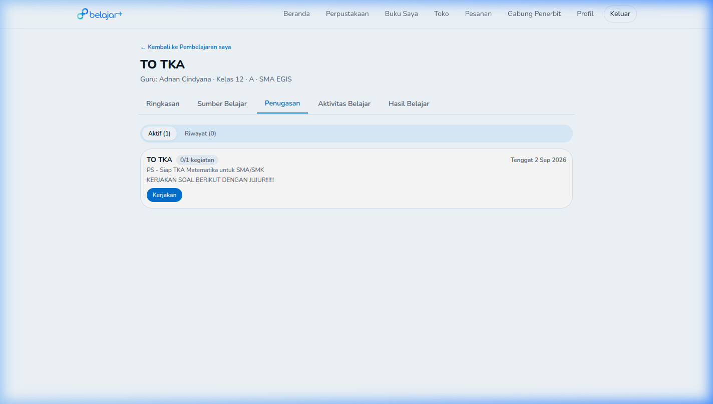
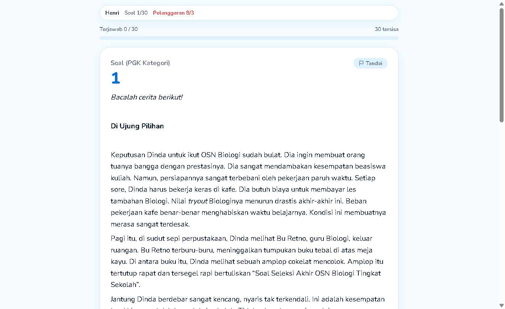
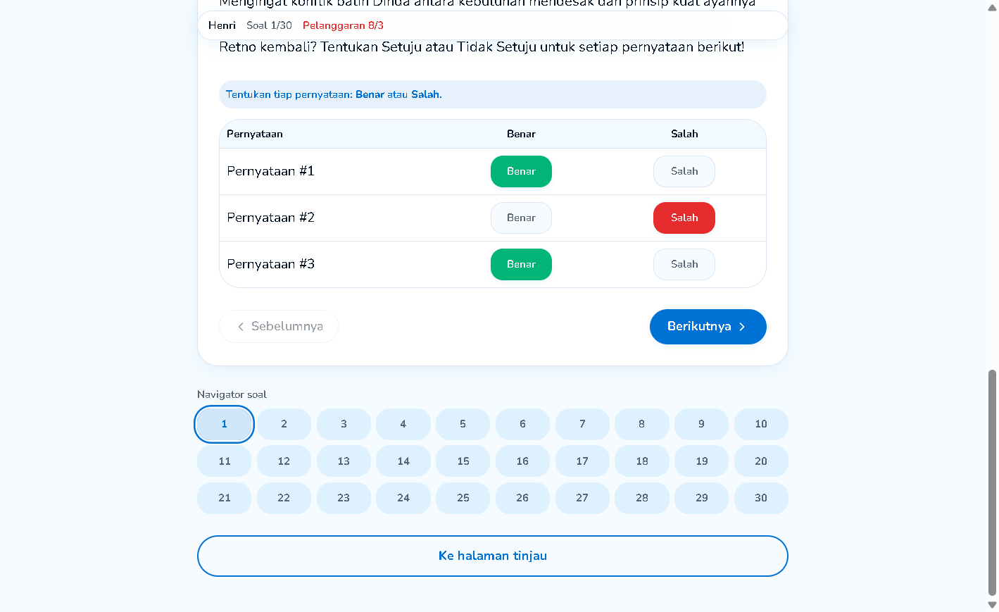
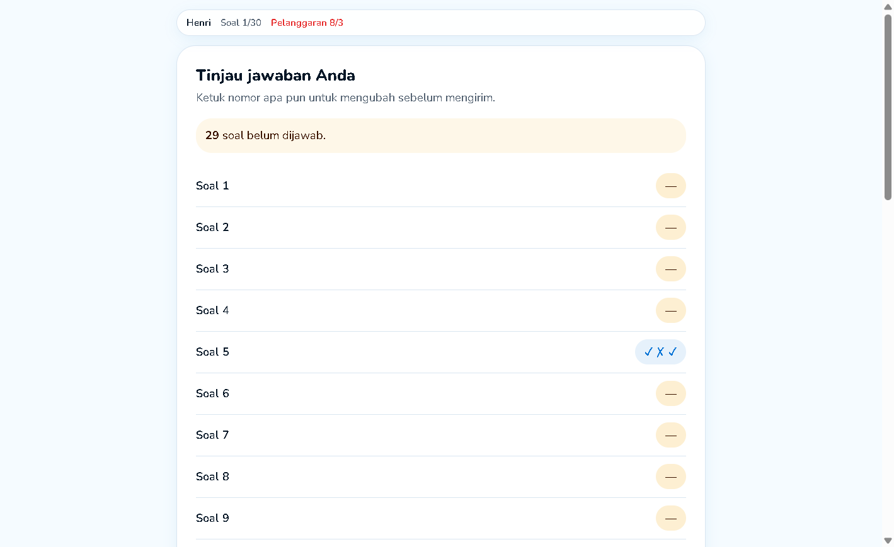

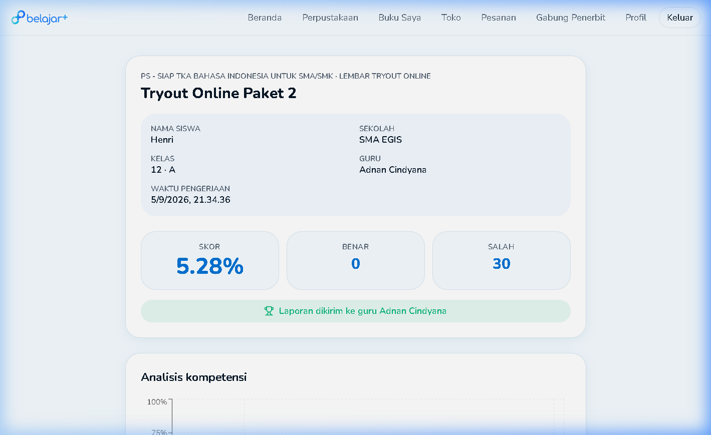
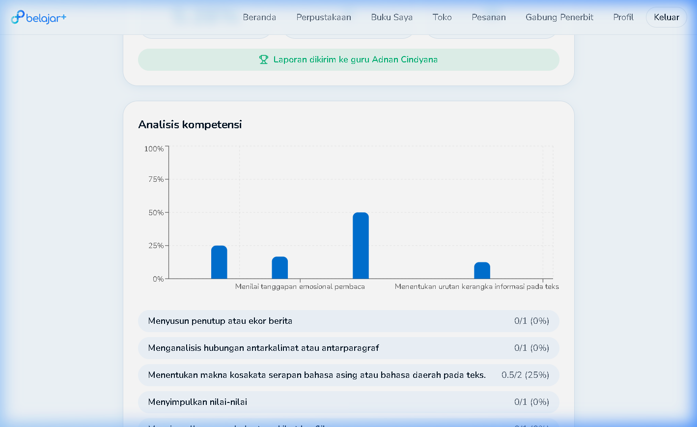
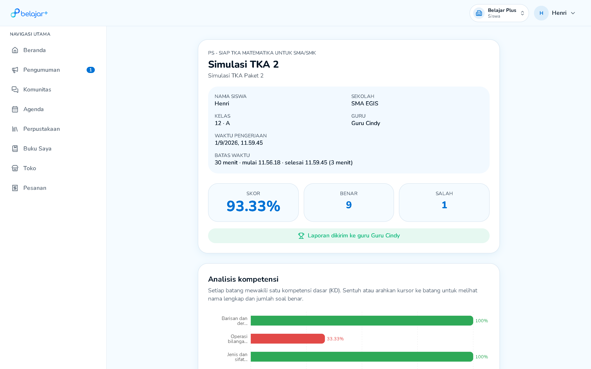
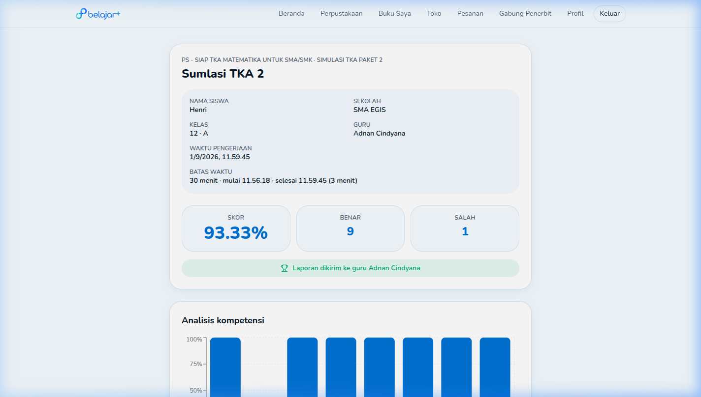
Buka menu Kelas Saya lalu klik tab Penugasan. Klik tombol biru "Kerjakan" untuk meluncurkan antarmuka ujian LJD. Perhatikan indikator merah Pelanggaran Anti-Cheat di bagian atas yang mendeteksi perpindahan tab browser. Baca teks stimulus, gunakan tombol "🚩 Tandai" untuk nomor ragu-ragu, dan lompat nomor dengan cepat lewat kotak Navigator Soal (1–30) di bagian bawah.
Sebelum mengirim lembar ujian, klik tombol "Ke halaman tinjau" untuk memastikan tidak ada soal yang terlewat (sistem menampilkan notifikasi "X soal belum dijawab"). Setelah dikumpulkan atau saat waktu 00:00 berakhir (auto-submit), sistem langsung menampilkan Skor Persentase, total Benar/Salah, konfirmasi pengiriman ke guru, serta grafik Analisis Kompetensi penguasaan materi.
Beli Buku di Toko & Panduan Pembayaran Manual
Toko & PembayaranBagaimana jika kuota buku perpustakaan sekolah sudah penuh atau kamu butuh buku teks pendamping serta paket Tryout SNBT? Siswa dan orang tua/wali murid dapat membeli buku mandiri langsung melalui menu Toko (Shop).
👨👩👧 Catatan Khusus Orang Tua / Wali Murid:
Pembayaran di BelajarPlus saat ini menggunakan sistem Transfer Manual (bukan payment gateway / QRIS otomatis) dan wajib mengunggah foto bukti transfer agar pesanan diverifikasi oleh admin sekolah. Ikuti 5 langkah terpadu berikut:
-
1. Eksplorasi Katalog & Faceted Filter Chips di Toko — Buka menu Toko di navigasi atas. Antarmuka terbaru dilengkapi chip filter pintar untuk memudahkan pencarian:
- Filter Kategori: Pilih chip kategori seperti Semua atau Teks Pendamping.
- Filter Tingkat Kelas: Saring instan dari Kelas 1 hingga Kelas 12.
- Filter Jenis Produk: Pilih Semua Jenis, Cetak, Digital, atau Paket (Cetak + Digital).
- Pengurutan: Atur urutan berdasarkan Terbaru, Harga Terendah, Harga Tertinggi, atau Judul A-Z.
- 2. Cek Keranjang Belanja (`/cart`) — Klik ikon Keranjang di pojok kanan atas. Pastikan judul buku, jenjang kelas, dan jumlah eksemplar sudah sesuai, lalu klik tombol biru "Lanjut ke checkout".
- 3. Halaman Checkout & Verifikasi Data Siswa (`/checkout`) — Pastikan kolom Identitas Siswa (Nama, Sekolah, Kelas, dan Rombel) sudah cocok. Jika memilih varian Cetak, isi nama penerima dan alamat pengiriman dengan lengkap. Klik tombol "Buat pesanan".
-
4. Halaman Detail Pesanan & Transfer Bank Manual — Layar akan menampilkan Nomor Pesanan Unik (contoh:
BPLUS-20260903-CA1606).
⚠️ PENTING: Lakukan transfer via ATM atau mobile banking sesuai total nominal. Wajib cantumkan Nomor Pesanan pada kolom Berita/Catatan Transfer agar admin dapat mencocokkan pembayaranmu.
*Catatan: Jika rincian rekening tujuan tertulis strip (-), segera konfirmasikan nomor rekening resmi ke bendahara / pihak sekolahmu. - 5. Unggah Bukti Struk & Aktivasi Buku — Foto struk ATM atau screenshot bukti mutasi m-banking (format JPG/PNG/PDF, ukuran maks 5 MB). Klik "Pilih file" lalu tekan tombol "Unggah bukti & konfirmasi". Status pesanan akan menjadi Menunggu konfirmasi. Begitu disetujui admin, buku digital otomatis langsung aktif di tab Milik Saya pada menu Koleksi Saya!
belajarplus.id/orders secara manual di bilah alamat browser untuk menghindari kendala sesi login berulang (redirect loop).
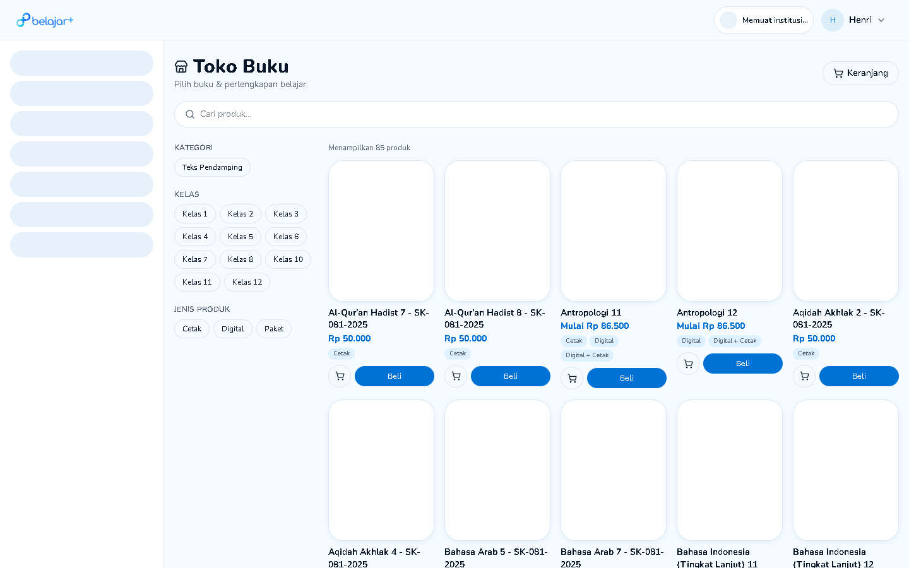
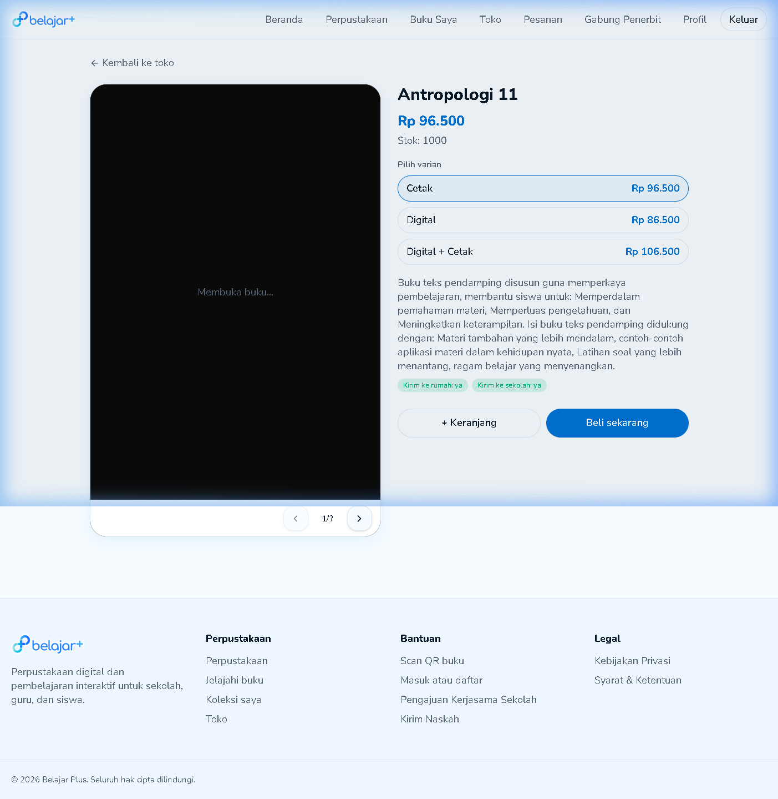
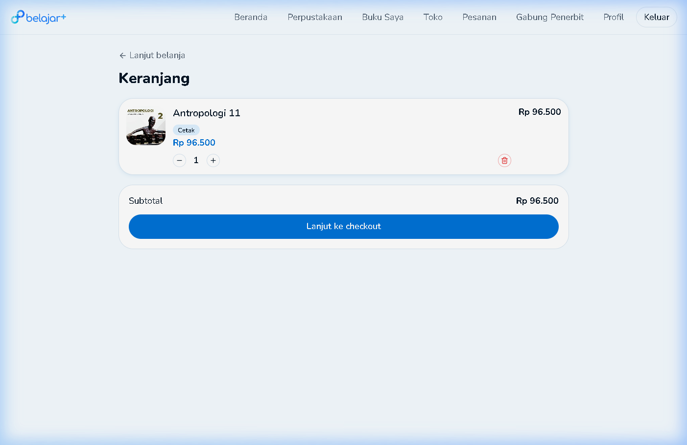
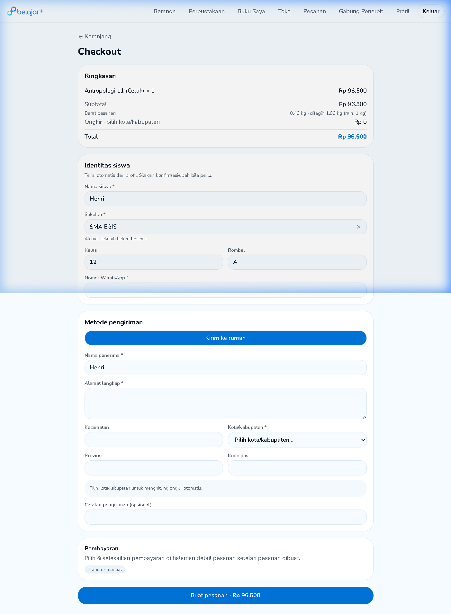

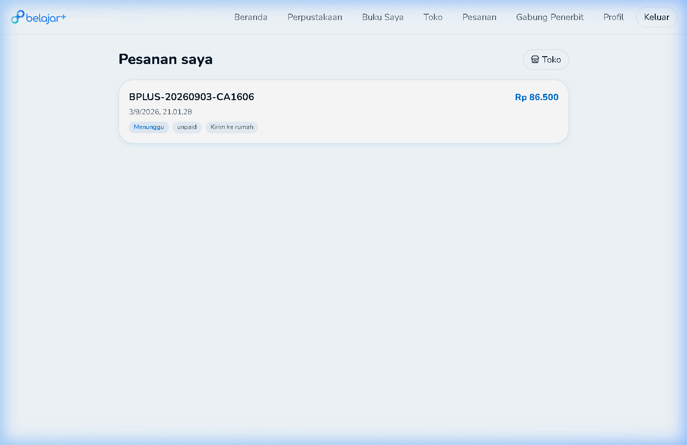
Buka menu Toko di navigasi atas. Pilih judul buku lalu tentukan varian (Digital, Cetak, atau Digital + Cetak). Klik "+ Keranjang" lalu buka ikon keranjang di pojok kanan atas dan klik "Lanjut ke checkout".
Di halaman Checkout, pastikan kolom Identitas Siswa (Nama, Sekolah, Kelas, Rombel) sudah benar. Jika memilih varian Cetak, isi alamat pengiriman lengkap. Klik "Buat pesanan" untuk lanjut.
Catat Nomor Pesanan Unik (contoh:
BPLUS-20260903-CA1606). Transfer nominal tepat via ATM/m-Banking, wajib cantumkan Nomor Pesanan di kolom Berita Transfer. Foto struk/screenshot mutasi (JPG/PNG/PDF, maks 5 MB) lalu klik "Unggah bukti & konfirmasi". Buku aktif di Buku Saya setelah admin verifikasi. Jika rekening tujuan masih strip (—), hubungi bendahara sekolah.
Pengaturan Akun, Profil Terpadu (4 Tab) & Keamanan Sesi
Akun & PrivasiLangkah penutup yang sangat krusial adalah melengkapi dan mengamankan identitas belajarmu. Buka menu Profil Saya (klik avatar foto profil di sudut kanan atas bilah navigasi). Antarmuka profil BelajarPlus v2.0 dirancang terintegrasi dengan 4 tab manajemen utama:
- 1. Tab "Institusi & Peran" & Tombol "+ Gabung Institusi" (Fitur Baru) — Menampilkan daftar sekolah mitra yang terhubung ke akunmu beserta peran aktifmu (Siswa). Jika kamu pindah sekolah atau bersekolah di dua institusi mitra sekaligus, klik tombol biru "+ Gabung Institusi" untuk menautkan sekolah baru langsung dari profil tanpa perlu membuat akun dari awal!
-
2. Tab "Keamanan" — Pusat proteksi akunmu:
- Perbarui Kata Sandi: Masukkan sandi saat ini dan buat sandi baru minimal 8 karakter secara berkala.
- Status Verifikasi Email: Memastikan emailmu bertanda centang hijau aktif.
- Nomor WhatsApp: Tautkan nomor WhatsApp aktif untuk pemulihan akun darurat dan notifikasi tugas penting.
- 3. Tab "Preferensi" — Menyesuaikan preferensi notifikasi akademik dan kenyamanan tampilan antarmuka.
- 4. Tab "Aktivitas" — Memantau riwayat log aktivitas masuk (login timestamp, peramban, dan perangkat) demi mencegah akses tidak sah.
- 5. Switcher Institusi di Header & SOP Logout — Gunakan tombol "Institusi aktif" di header untuk beralih instansi tanpa logout. Jika menggunakan komputer lab sekolah atau gawai bersama, selalu klik Keluar (Logout) setelah selesai belajar!
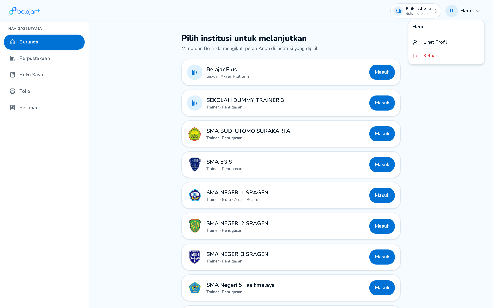
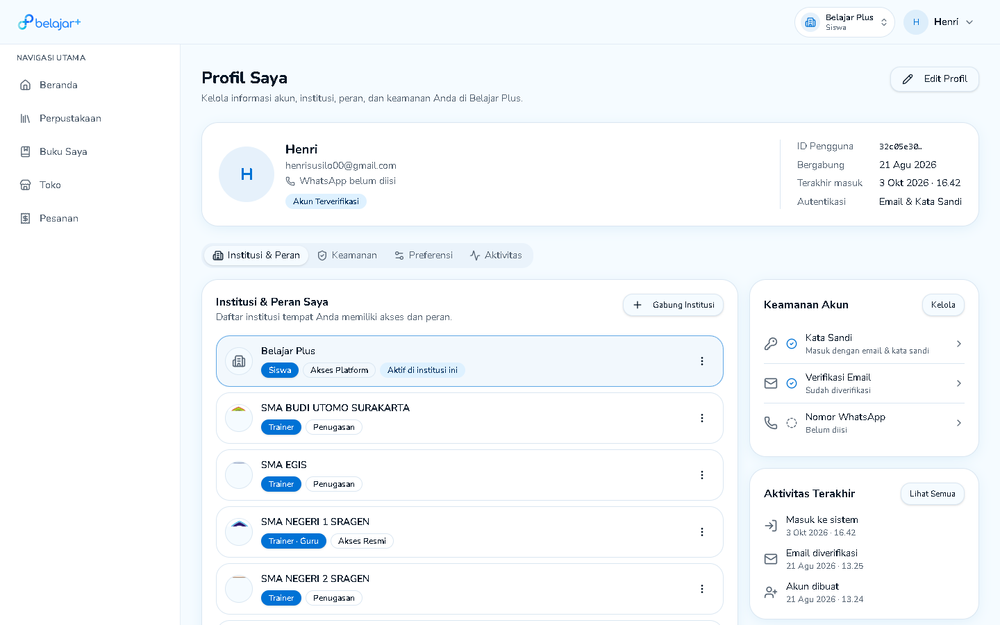
Pendaftaran, Aktivasi Akun & Subdomain Resmi Sekolah
Registrasi & Akses MasukBapak/Ibu Pendidik dapat mengakses platform BelajarPlus melalui portal satu pintu di belajarplus.id/auth atau langsung melalui subdomain unik resmi masing-masing sekolah (contoh: https://egis.belajarplus.id):
- 1. Formulir Registrasi Satu Pintu: Pada tab "Daftar" ("Satu halaman untuk siswa & guru"), ketikkan Nama Lengkap dengan gelar resmi, alamat email aktif (disarankan email kedinasan, akun belajar.id, atau email pribadi terverifikasi), dan buat kata sandi aman minimal 8 karakter.
- 2. Validasi Sandi Visual: Gunakan centang "Tampilkan Password" untuk memastikan karakter sandi telah sesuai dan bebas dari kesalahan ketik.
- 3. Aktivasi Email Otomatis: Tekan tombol biru "Daftar". Buka kotak masuk email (atau folder Spam/Promosi) dan klik tombol aktivasi untuk mengonfirmasi keaslian akun.
- 4. Penghubungan ke Institusi: Saat login pertama kali, akun bapak/ibu guru akan diverifikasi ke instansi sekolah mitra dengan peran Guru / Pengajar atau Wali Kelas sehingga seluruh menu administrasi terbuka otomatis.
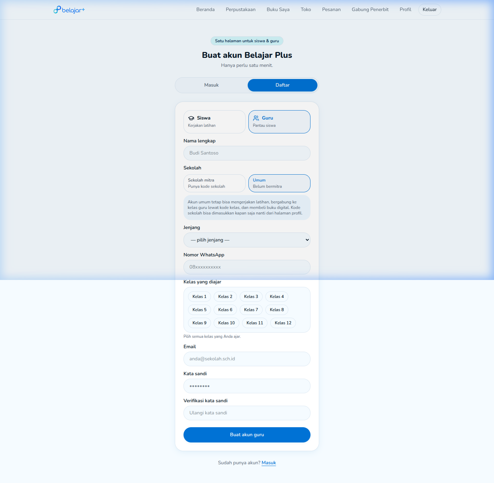
Eksplorasi Dashboard Utama Pengajar SMA EGIS (/admin) & Baris Aksi Cepat
Pusat Kendali GuruSetelah memilih institusi mengajar (seperti tenant rujukan resmi SMA EGIS), bapak/ibu guru langsung disambut oleh pusat kendali terpadu di belajarplus.id/admin:
- 1. Baris 5 Aksi Cepat Pengajar: Pintasan langsung satu klik untuk mengakses fitur harian: Kelola Kelas, Penugasan, Hasil Siswa, Perpustakaan, dan Absensi.
- 2. Navigasi Sidebar Khusus Guru: Akses mudah ke menu E-Learning (Daftar Kelas & Bank Soal), Absensi Pembelajaran, Warta Pengumuman, Kalender Agenda Pengajaran, dan Forum Komunitas Civitas.
- 3. Metrik Hasil Siswa Real-time: Memantau akumulasi seluruh pengerjaan tugas dan kuis yang telah dikumpulkan siswa yang siap ditinjau.
- 4. Statistik Koleksi Belajar Aktif: Informasi ketersediaan modul bank soal latihan kurikulum dan jumlah judul buku digital sekolah yang siap dijadikan rujukan belajar.

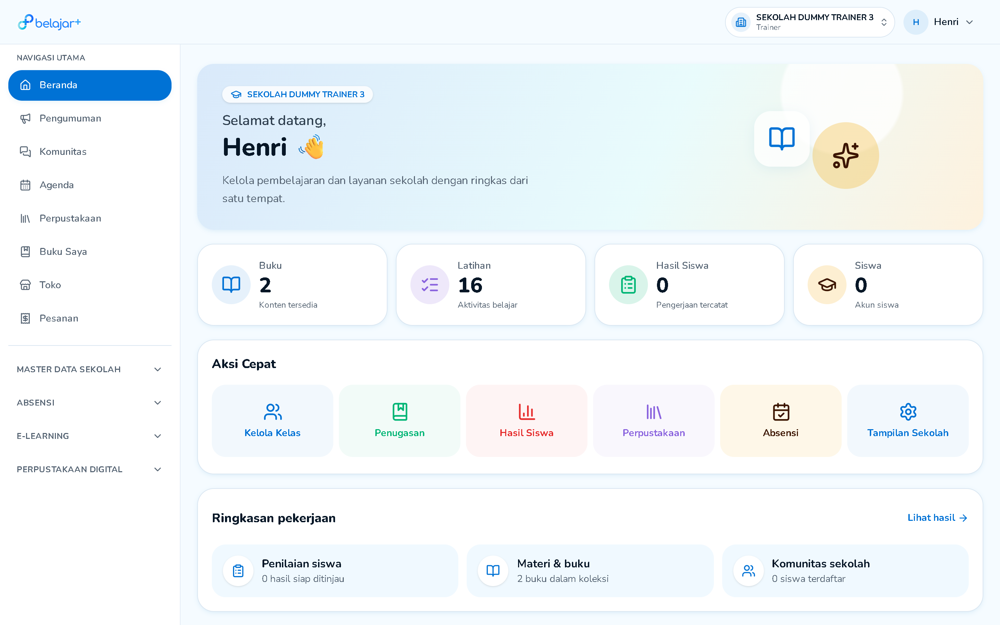
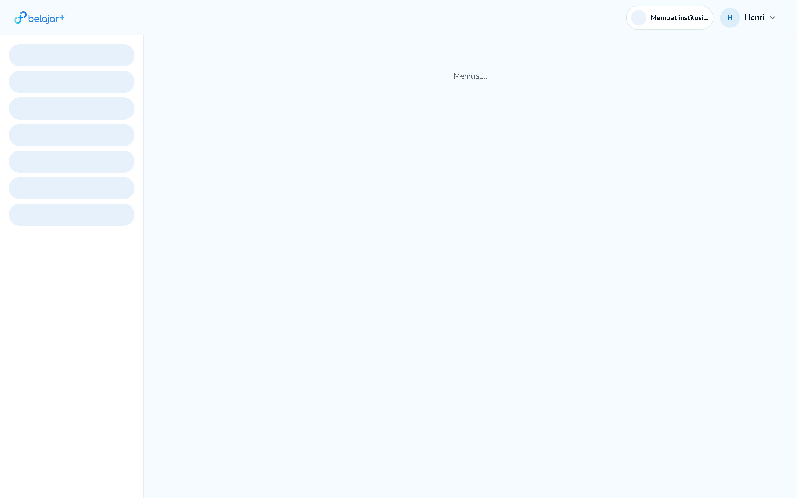
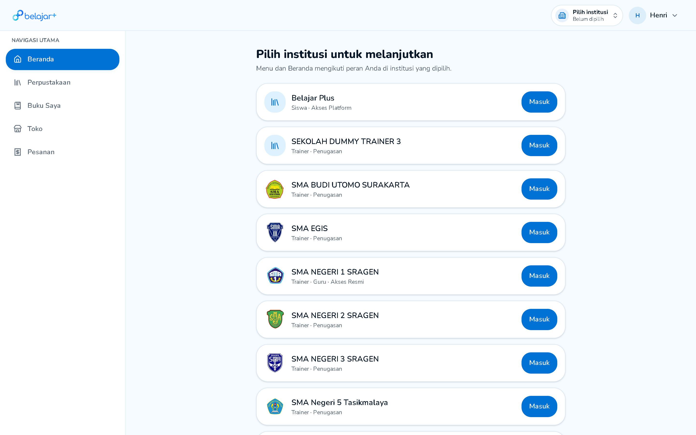
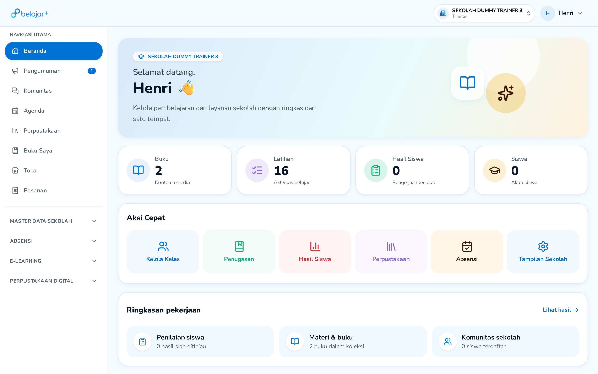

Buat & Kelola Ruang Kelas E-Learning (/admin/classes) + Distribusi Akun
Manajemen Kelas & RombelBuka menu "Kelola Kelas" untuk membuat ruang belajar digital interaktif per mata pelajaran dan mendistribusikan akun siswa:
- 1. Buat Kelas Baru: Klik tombol "Tambah Kelas", tentukan Nama Kelas (contoh: Kelas 10-A Matematika Wajib), pilih Jenjang (SMA), dan tetapkan Mata Pelajaran pengampu serta Tahun Ajaran berjalan.
- 2. Kode Kelas Unik (
BLJ-XXXXXX): Sistem menerbitkan 6 digit kode kelas acak. Bagikan kode ini jika siswa bergabung mandiri dari aplikasi siswa. - 3. Distribusi Kredensial Siswa (Tugas Wali Kelas): Sesuai lembar Berita Acara Serah Terima Akun resmi sekolah, masing-masing Wali Kelas membagikan lembar kredensial login (Email & Password Awal) kepada siswa di kelasnya serta meminta paraf konfirmasi tanda terima.
- 4. Verifikasi Anggota Rombel: Periksa daftar siswa di tab "Anggota". Pastikan seluruh siswa sudah terhubung (kapasitas standar 36 siswa per rombel). Guru dapat mengeluarkan siswa yang salah memilih rombel belajar dengan satu klik.
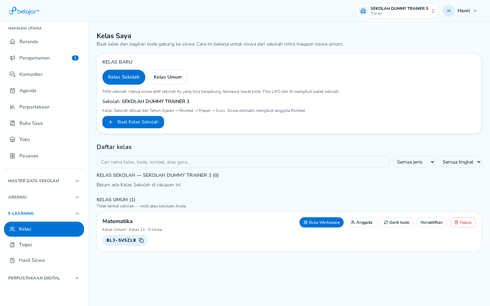
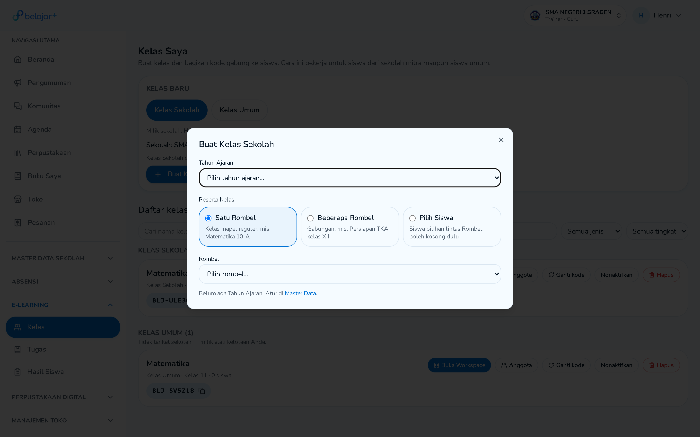

Pengelolaan Materi E-Learning, Modul LKPD Interaktif & Kurasi Sumber Belajar
Materi Ajar, LKPD Web & PerpustakaanDi dalam ruang kelas e-learning, guru menyusun pengalaman belajar yang kaya dan interaktif melalui tab Aktivitas Belajar dan tab Sumber Belajar, termasuk integrasi Lembar Kerja Peserta Didik (LKPD) Interaktif:
• Model 2 — Modul Pembelajaran Interaktif Web / HTML5: Guru menyematkan modul web interaktif langsung di tab Aktivitas Belajar (seperti simulasi sains PhET, GeoGebra matematika dinamis, modul H5P interaktif, atau Google Docs/Canva). Siswa dapat menggeser slider eksperimen langsung di aplikasi.
• Model 3 — Lembar Kerja Praktikum Non-Tes (≤ 10 MB): Siswa mengunduh template LKPD eksperimen/proyek, mengerjakan observasi nyata, lalu mengunggah kembali file dokumen (PDF/DOCX/JPG). Guru menilai dengan rubrik non-tes terstruktur.
- 1. Penyusunan Aktivitas E-Learning Terstruktur: Di tab "Aktivitas Belajar", susun urutan bab pertemuan (contoh: Pertemuan 1 - Konsep & Simulasi, Pertemuan 2 - Analisis LKPD). Sematkan materi ringkasan, instruksi kerja, dan tautan aktivitas interaktif.
- 2. Tautkan Buku Teks Resmi Kemendikbud: Pada tab "Sumber Belajar", pilih e-book buku teks kurikulum (Kurikulum Merdeka / K13) dari perpustakaan digital sekolah yang dijadikan rujukan belajar wajib.
- 3. Tautan Langsung Bab & Halaman Spesifik: Guru dapat mengarahkan siswa langsung ke nomor bab dan halaman yang sedang dibahas tanpa perlu menyuruh siswa mencari manual.
- 4. Bebas Unduh Ilegal & Ber-ISBN: Seluruh e-book terlisensi resmi dan dapat dipinjam siswa dengan 1 klik langsung di aplikasi tanpa membebani memori HP dengan file PDF bajakan.
Buat Penugasan, LKPD Interaktif Native (LJD) & Ujian Aman (/admin/assignments)
Asesmen, LKPD Native & 6 Tipe SoalBuka menu "Penugasan" untuk merilis asesmen pembelajaran digital dan LKPD interaktif bagi siswa dengan fitur pengawasan terpadu:
- 1. Beragam Jenis Asesmen: Tersedia pilihan Asesmen Formatif per bab, Asesmen Sumatif Tengah Semester (STS), Sumatif Akhir Semester (SAS), Simulasi Ujian Kelulusan, Tryout SNBT/TKA, hingga LKPD Eksperimen.
- 2. Mendukung 6 Variasi Tipe Respon Soal:
- Pilihan Ganda Tunggal (MCQ): 1 kunci jawaban benar dengan auto-scoring instan.
- Pilihan Ganda Kompleks (MCMA): Siswa memilih lebih dari satu jawaban benar (model Asesmen Nasional/AKM).
- Kategori Benar/Salah (PGK Kategori): Mengelompokkan deretan pernyataan ke dalam matriks klasifikasi.
- Menjodohkan (Matching Pair): Menghubungkan premis stimulus dengan pasangan respon konsep yang bersesuaian.
- Uraian / Esai Terbuka: Menuliskan analisa konsep, dilengkapi fitur koreksi cerdas bertenaga token Kredit AI.
- Unggah Lembar Kerja Praktik Siswa: Siswa mengunggah berkas dokumen (PDF, Word, JPG, Excel) berukuran hingga 10 MB.
- 3. Batas Waktu & Durasi Pengerjaan: Tetapkan batas tenggat pengumpulan (deadline tanggal & jam) serta durasi pengerjaan hitung mundur (contoh: 90 menit).
- 4. Fitur Pengawas Anti-Cheat (Focus Tracker): Aktifkan proteksi ujian digital. Sistem secara otomatis merekam dan memberi peringatan jika siswa berpindah tab browser atau membuka aplikasi lain saat ujian berlangsung.
- 5. Mode Pratinjau Asesmen (Assessment Preview): Guru dapat menguji coba paket soal dari sudut pandang siswa tanpa meninggalkan riwayat nilai kotor (Zero DB Dirty) sebelum dirilis resmi.
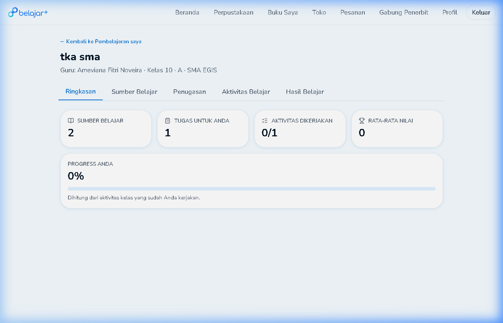
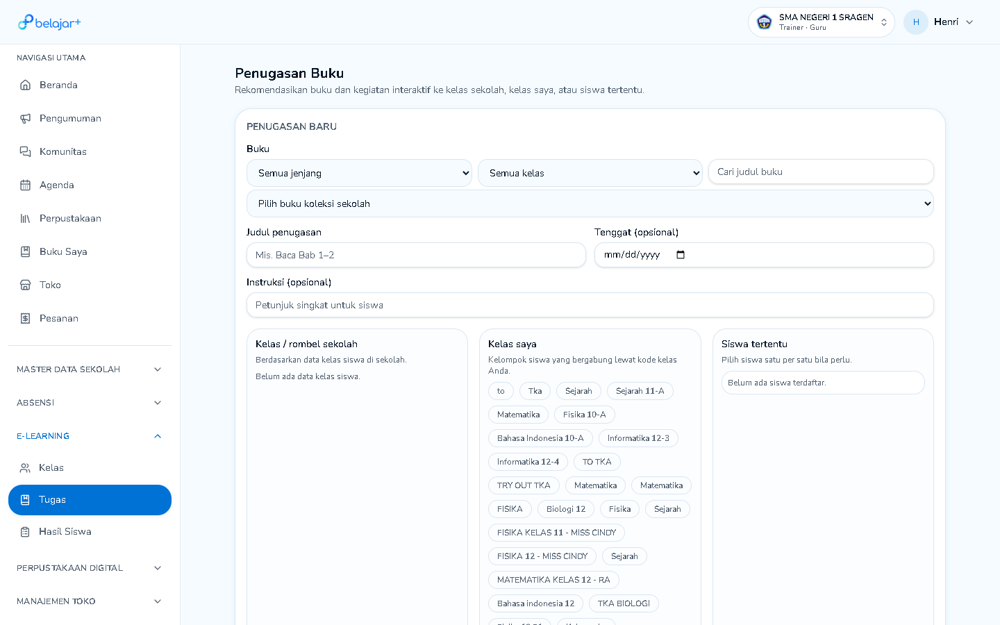
Penilaian Hasil Siswa, Rubrik Non-Tes LKPD & Pembedaan Kritis NULL vs 0 (/admin/submissions)
Koreksi AI, Rubrik Non-Tes & RaporBuka menu "Hasil Siswa" untuk mengevaluasi jawaban, mengoreksi esai otomatis dengan AI, menginput nilai rubrik non-tes, dan mengunduh transkrip nilai siap e-Rapor:
- 1. Penilaian Esai Cerdas dengan AI: Guru dapat memanfaatkan fitur koreksi esai otomatis bertenaga AI. Sistem membandingkan jawaban siswa dengan rubrik/kunci jawaban dan memberikan rekomendasi skor serta feedback perbaikan (menggunakan kuota Kredit AI sekolah: 1 kredit = 1 jawaban esai dinilai).
- 2. Penilaian Non-Tes LKPD (Praktik, Proyek, Portofolio, Observasi): Untuk penugasan lembar kerja praktikum laboratorium atau proyek, guru menambahkan komponen Non-Tes di tab Hasil Belajar. Menginput skor 0–100 berdasarkan rubrik kinerja siswa.
- 3. Pembedaan Kritis Nilai NULL vs Nilai 0:
• Siswa Belum Mengumpulkan / Izin: Biarkan kolom nilai kosong (NULL). Sistem tidak akan memasukkan siswa tersebut ke pembagi rata-rata rombel, sehingga tidak menjatuhkan rerata kelas secara tidak adil.
• Siswa Mengumpulkan dengan Skor Nol / Sanksi: Input angka0secara eksplisit. Sistem akan menghitungnya sebagai skor nol riil dalam kalkulasi nilai akhir rapor. - 4. Transkrip Nilai Komprehensif & Analisis Butir Soal: Tinjau skor total, persentase ketercapaian KKM/KD, rekam jejak anti-cheat (jumlah perpindahan tab), dan durasi pengerjaan masing-masing siswa. Grafik distribusi nilai memudahkan guru merancang program remedial atau pengayaan.
- 5. Ekspor Nilai Siap Rapor: Unduh berkas rekapitulasi nilai seluruh rombel dalam format spreadsheet Excel (
.xlsx) siap olah untuk pengisian e-Rapor sekolah.
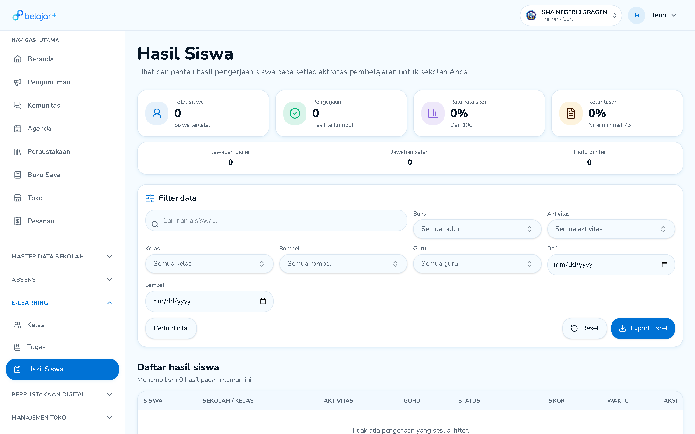
Presensi Digital Kelas & Validasi Izin Siswa (/admin/attendance)
Presensi GPS 120mBuka menu "Absensi" pada bilah navigasi atau tombol aksi cepat beranda untuk memantau kehadiran siswa secara real-time berbasis geolokasi:
- 1. Presensi Berbasis Radius Geolokasi (120 Meter): Siswa melakukan check-in mandiri melalui smartphone masing-masing. Sistem otomatis memvalidasi koordinat GPS siswa berada di dalam radius toleransi 120 meter dari titik pusat sekolah.
- 2. Rekapitulasi Status Kehadiran Real-time: Guru dan Wali Kelas dapat melihat secara langsung rekap status civitas: Hadir Tepat Waktu, Terlambat, Izin, Sakit, atau Alpa.
- 3. Verifikasi Surat Izin/Sakit: Siswa yang berhalangan hadir dapat mengunggah foto surat dokter/keterangan orang tua langsung dari aplikasi, dan guru dapat memvalidasinya dengan tombol persetujuan.
- 4. Ekspor Rekap Presensi Bulanan: Unduh berkas rekapitulasi kehadiran bulanan per rombel dalam format spreadsheet Excel untuk arsip laporan wali kelas dan BK.
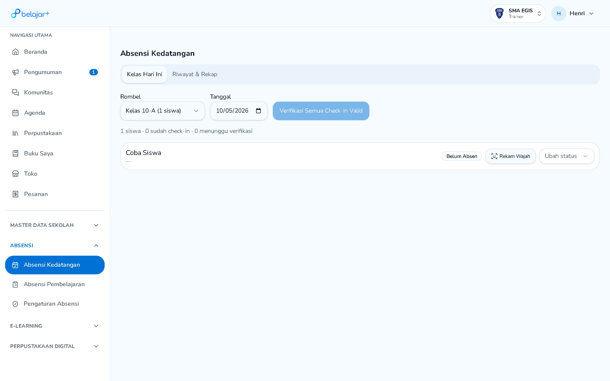
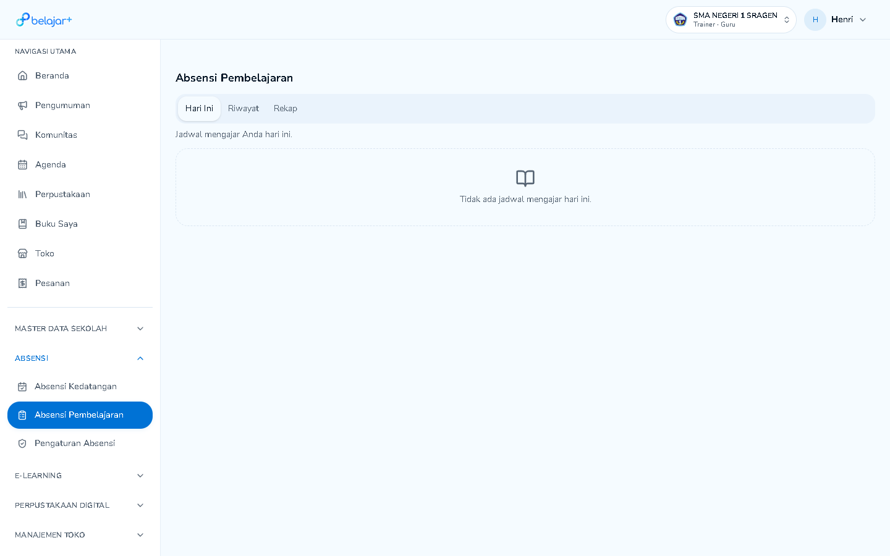

Publikasi Pengumuman Kelas & Kalender Agenda Pembelajaran
Komunikasi & JadwalMaksimalkan komunikasi interaktif dengan seluruh siswa melalui menu Pengumuman dan Agenda:
- 1. Broadcast Pengumuman Instan: Klik tombol "Buat Pengumuman", tuliskan judul warta, isi instruksi resmi, dan sematkan berkas lampiran. Siswa akan menerima badge notifikasi hijau seketika di dashboard mereka.
- 2. Kategori Warta Fleksibel: Tentukan lingkup pengumuman apakah untuk kelas tertentu, seluruh rombel tingkat, atau pengumuman umum sekolah.
- 3. Kalender Agenda Pembelajaran: Tambahkan jadwal tatap muka kelas, batas pengumpulan proyek mingguan, atau jadwal simulasi ujian di kalender agenda akademik sekolah agar siswa tidak melewatkan agenda penting.
- 4. Interaksi Forum Komunitas: Bina budaya literasi positif dengan membagikan rekomendasi buku ajar di feed Komunitas sekolah.
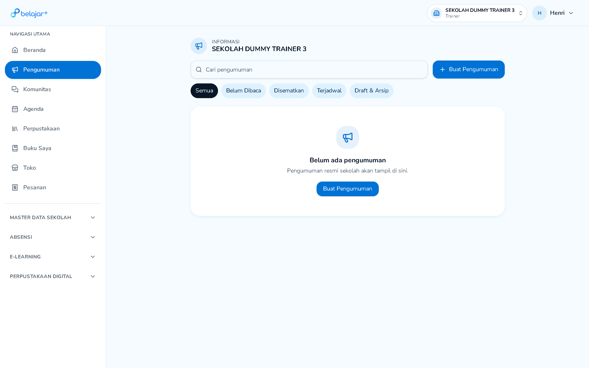
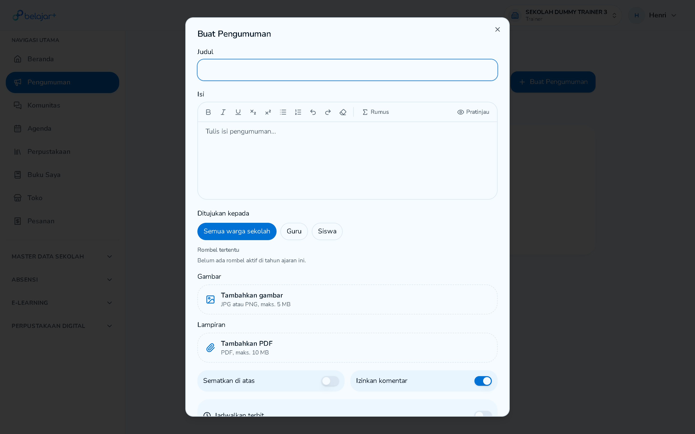
5 Modul Praktik Mengajar Digital (Microteaching)
Serial video studi kasus interaktif dan simulasi skenario pengajaran kelas nyata menggunakan ekosistem BelajarPlus. Dirancang khusus untuk mengoptimalkan literasi digital guru & siswa.
Fondasi Sistem & Tata Kelola Operasional Admin Sekolah
Admin Sekolah memegang kunci utama kelancaran ekosistem Belajar Plus. Seluruh data master kurikulum, pembagian rombel, jadwal pelajaran bebas bentrok, impor batch Dapodik, konfigurasi presensi GPS, hingga pengaturan kuota perpustakaan disiapkan secara terstruktur oleh Admin sebelum semester belajar dimulai.
Navigasi & Konteks Institusi: Multi-Sekolah, Sidebar 8 Modul & Keamanan Akun
Navigasi & Multi-TenantSebagai Admin Sekolah, pastikan Anda selalu mengelola data pada sekolah yang benar sebelum melakukan perubahan master data:
- 1. Pemilih Institusi (Institution Switcher): Terletak di bar atas (header). Klik nama sekolah untuk memastikan Anda sedang aktif di institusi yang dituju. Pengelola multi-kampus atau yayasan dapat berpindah sekolah secara instan tanpa perlu logout.
- 2. Menu Navigasi Samping (Sidebar 8 Modul):
- Beranda / Dashboard: Ringkasan metrik statistik pengguna aktif, tugas, dan buku sekolah.
- E-Learning (Kelas): Manajemen direktori seluruh ruang kelas sekolah.
- Asesmen & Penugasan: Bank soal sekolah, kurikulum latihan, dan pengawasan ujian LJD.
- Presensi: Absensi kedatangan GPS, antrean verifikasi massal, dan rekap bulanan.
- Master Data: Tahun ajaran, rombel, mata pelajaran, jadwal pelajaran, PTK, dan siswa.
- Perpustakaan: Katalog buku pelajaran, manajemen kursi lisensi (seats), antrean pinjam, dan audit DRM.
- Informasi: Siaran pengumuman resmi sekolah dan kalender agenda institusi.
- Toko Sekolah: Manajemen pemesanan perlengkapan, seragam, dan buku cetak siswa.
- 3. Profil & Keamanan Akun: Terletak di pojok kanan atas untuk memeriksa peran aktif (Admin Sekolah), mengganti kata sandi terenkripsi, atau keluar (logout) secara aman.
Tahap 1: Pengelolaan Pengguna (PTK & Siswa) — Approval, Impor Spreadsheet Batch 40–60 & Pengeluaran Aman
Pengguna & KeanggotaanSemua guru dan siswa yang beraktivitas di sekolah wajib disahkan sebagai anggota resmi sekolah sebelum dapat dijadwalkan mengajar atau masuk rombel:
- A. Mengelola Guru & Tenaga Kependidikan (PTK):
- Persetujuan Pengajuan Masuk: Buka menu Master Data → PTK. Tinjau antrean permohonan guru/staf. Klik Setujui untuk mengaktifkan statusnya sebagai PTK resmi sekolah.
- Mengundang Guru via Email: Klik tombol Undang PTK. Masukkan alamat email resmi guru pengampu. Undangan otomatis terhubung saat guru masuk ke sistem.
- B. Mengelola Siswa & Impor Batch Dapodik:
- Persetujuan Pendaftaran Mandiri: Buka menu Master Data → Siswa atau Pendaftaran Siswa. Tinjau identitas siswa dan klik Setujui.
- Impor Massal Spreadsheet (Template CSV/Excel): Buka Master Data → Siswa → Tambah / Impor Siswa. Unduh format resmi spreadsheet. Masukkan data NISN, nama lengkap, email, dan rombel tujuan. Disarankan mengunggah dalam batch 40–60 baris per berkas agar proses parsing dan validasi database berjalan instan.
- Pengeluaran Siswa Mutasi/Lulus: Jika siswa mutasi atau lulus, pilih opsi pengeluaran siswa dari daftar. Sistem menjaga integritas data tanpa menghapus arsip nilai lampau untuk kepatuhan audit BAN-S/M.

Tahap 2: Setup Master Data Kurikulum — Tahun Ajaran, Rombel, Mapel & Jadwal Bebas Bentrok
Fondasi KurikulumFondasi kurikulum sekolah wajib disusun runtut: Tahun Ajaran → Rombel → Mapel → Jadwal Pelajaran:
- A. Tahun Ajaran & Semester Berjalan:
- Masuk ke Master Data → Tahun Ajaran.
- Buat Tahun Ajaran baru (contoh:
2026/2027) dan tetapkan Semester aktif (Ganjil / Genap). - Pastikan semester aktif ditandai badge hijau sebagai acuan seluruh rombel, jadwal, dan rapor berjalan.
- B. Rombongan Belajar (Rombel):
- Masuk ke Master Data → Rombel.
- Tambahkan nama rombel (contoh:
Kelas 10-A,Kelas 11 IPA 1). - Tentukan Tingkat dan Wali Kelas dari daftar guru terdaftar.
- Klik Kelola Anggota Siswa → masukkan siswa hingga counter unassigned menjadi 0 siswa.
- C. Mata Pelajaran (Mapel):
- Masuk ke Master Data → Mapel. Daftarkan seluruh mata pelajaran kurikulum sekolah (Matematika, Bahasa Indonesia, Fisika, dsb.).
- D. Jadwal Pelajaran Bebas Bentrok & Kelas Gabungan:
- Masuk ke Master Data → Jadwal Pelajaran. Pilih Rombel yang ingin diatur jadwalnya.
- Tambahkan slot waktu: Hari, Jam Mulai–Selesai, Mapel, dan Guru Pengampu.
- Dukungan Kelas Gabungan: Sistem mendukung skenario satu guru mengajar siswa dari beberapa rombel sekaligus pada jam yang sama (misal: Guru Agama mengajar gabungan siswa Kelas 11-1 dan 11-2).
Tahap 3: Tata Kelola E-Learning & Direktori Kelas Sekolah (/admin/classes)
Direktori E-LearningAdmin Sekolah dapat memantau, merapikan, dan mengatur seluruh ruang kelas digital yang beroperasi di sekolah:
- A. Direktori Kelas Sekolah: Buka menu Kelas / E-Learning di sidebar. Gunakan filter Tingkat, Rombel, Mapel, dan Guru untuk menemukan kelas secara cepat.
- B. Pemeliharaan & Co-Teacher:
- Menambahkan rekan pengampu (co-teacher) pada kelas tim teaching atau guru pengganti.
- Mengoreksi penamaan kelas atau menghapus ruang kelas yang tidak sengaja dibuat ganda oleh pengajar.
- Menautkan ruang kelas digital ke Rombel resmi agar hasil penilaian otomatis terhubung ke rapor.
- C. Pemantauan Materi & Jurnal: Memastikan setiap kelas aktif memiliki alur materi ajar di tab Aktivitas Belajar dan pengisian presensi KBM di tab Jurnal Mengajar.
Tahap 4: Konfigurasi Presensi Digital Geofencing GPS & Verifikasi Massal 500+ Siswa
Presensi GPS & Antrean MassalMenyiapkan infrastruktur presensi kedatangan gerbang sekolah anti-manipulasi lokasi:
- A. Pengaturan Titik GPS & Jam Operasional:
- Masuk ke Presensi → Pengaturan.
- Titik Koordinat: Masukkan Latitude dan Longitude gerbang utama sekolah dan tentukan radius toleransi geofencing (rekomendasi: 50–120 meter).
- Jam Batas: Atur jam masuk normal (contoh: 07.00 WIB), toleransi keterlambatan menit, dan jam pulang operasional.
- B. Kebijakan Verifikasi Otomatis (Toggle Verifikasi):
- Jika tombol verifikasi dimatikan: Siswa yang absen di dalam radius GPS langsung berstatus Hadir / Terlambat otomatis tanpa verifikasi manual petugas.
- Jika diaktifkan: Seluruh rekaman presensi masuk antrean "Menunggu" dan disetujui petugas piket.
- Proteksi Anti-Fake GPS: Presensi di luar radius GPS selalu ditahan otomatis ke antrean verifikasi untuk mencegah pemalsuan lokasi.
- C. Antrean Verifikasi Cepat & Rekap Excel:
- Masuk ke Presensi → Absensi Kedatangan → Riwayat & Rekap.
- Petugas dapat memverifikasi atau menolak ratusan presensi siswa sekaligus (kapasitas engine 500+ siswa sekaligus tanpa lag).
- Unduh rekapitulasi kehadiran bulanan dalam format Excel/CSV untuk arsip kedinasan.
Tahap 5: Bank Soal & Manajemen Asesmen Sekolah — 6 Variasi Soal & Fitur Pratinjau Bersih
Asesmen & 6 Tipe SoalMengelola repositori bank soal sekolah dan pengaturan ujian Lembar Jawab Digital (LJD):
- A. 6 Variasi Tipe Soal Kurikulum Nasional:
- 1. Pilihan Ganda Tunggal (MCQ): 1 kunci jawaban benar otomatis.
- 2. Pilihan Ganda Kompleks (MCMA): Lebih dari satu opsi benar (model AKM).
- 3. Kategori / Benar-Salah: Pengelompokan pernyataan ke tabel matriks.
- 4. Menjodohkan (Matching): Menghubungkan pasangan premis dan respons.
- 5. Isian Singkat & Esai Panjang: Penilaian teks analitis dengan dukungan token AI kredit.
- 6. Unggah Berkas Tugas: Pengumpulan dokumen (PDF, Word, foto LJD hingga 10 MB).
- B. Ujian Aman (Secure Exam Environment): Atur durasi pengerjaan, kunci layar penuh (fullscreen lock), deteksi perpindahan tab browser, dan batas tenggat otomatis.
- C. Mode Pratinjau Asesmen (Assessment Preview): Admin dapat mencoba pengerjaan instrumen soal persis seperti layar siswa tanpa meninggalkan sampah nilai uji coba di database.
Tahap 6: Perpustakaan Digital Sekolah — Kursi Lisensi (Seats), Antrean Pinjam & DRM Forensik
Perpustakaan & Lisensi DRMMengelola ketersediaan buku digital Kemendikbudristek dan penerbit mitra untuk seluruh peserta didik:
- 1. Sirkulasi & Kursi Lisensi Simultan (Concurrent Seats):
- Buka menu /admin/library untuk memantau 4 metrik utama: total Judul, Lisensi Buku, buku Sedang Dipinjam, dan Kuota Tersedia.
- Sistem mengatur pengembalian buku otomatis saat tenggat habis sehingga lisensi kembali tersedia bagi siswa lain di rak digital.
- Pantau antrean tunggu (waiting list) pada judul-judul buku yang kuotanya sedang penuh terpakai.
- 2. Deep-Link Tugas Membaca e-Reader: Buku terhubung ke aktivitas kelas — siswa yang membuka tugas membaca langsung diarahkan ke halaman bab tujuan tanpa mencari manual.
- 3. Audit Forensik Keamanan Hak Cipta DRM (/admin/library/security):
- Enkripsi lembar bacaan berstandar perbankan dengan watermark nama dinamis peminjam di setiap halaman.
- Modul forensik merekam setiap insiden percobaan tangkapan layar (screenshot), lengkap dengan nama siswa, judul buku, halaman, dan waktu kejadian.
Tahap 7: Toko Sekolah, Siaran Pengumuman Resmi & Kalender Agenda Institusi
Operasional & KomunikasiMendukung kelancaran logistik sekolah, komunikasi resmi civitas, dan jadwal kalender akademik:
- A. Manajemen Toko Sekolah (/admin/sales):
- Kelola katalog seragam, atribut, buku teks fisik, dan modul pengayaan sekolah.
- Pantau pesanan masuk siswa, konfirmasi bukti pembayaran transfer, dan ubah status pengiriman barang.
- B. Siaran Pengumuman Resmi: Publikasikan surat edaran dinas, instruksi pelaksanaan ujian, atau maklumat hari libur yang langsung tampil di dashboard seluruh civitas sekolah.
- C. Kalender Agenda Institusi: Jadwalkan kalender kegiatan penting sekolah seperti gladi bersih asesmen, rapat dinas dewan guru, dan pekan pembagian rapor.
Fokus Kepemimpinan & Pengawasan Mutu Akademik Kepala Sekolah
Kepala Sekolah memegang peran strategis dalam menjamin mutu pembelajaran di sekolah. Melalui Belajar Plus, Kepala Sekolah memiliki hak istimewa untuk melakukan supervisi pembelajaran langsung di kelas tanpa meminta kode kelas, memantau kedisiplinan mengajar lewat Jurnal Guru, memvalidasi dan mengunci snapshot resmi rapor rombel (dengan perlindungan integritas NULL vs Nilai 0), mengontrol efisiensi anggaran BOS Buku & Saldo AI, serta mengambil keputusan berbasis analitik komprehensif.
Pilar 1: Navigasi Eksekutif & Kedaulatan Data Multi-Tenant Institusi
Kedaulatan Data & Multi-TenantMendukung pimpinan yang menaungi satu atau beberapa institusi pendidikan sekaligus di bawah satu akun terenkripsi:
- 1. Pemilih Institusi (Institution Switcher): Terletak di header atas. Kepala Sekolah dapat beralih antar unit sekolah binaan atau yayasan secara instan tanpa perlu logout akun.
- 2. Dashboard Eksekutif Terpadu (/admin): Menampilkan ringkasan metrik kesehatan sekolah secara real-time: total civitas aktif (guru & siswa), persentase kehadiran hari ini, volume tugas yang berjalan, dan utilisasi sirkulasi buku.
- 3. Keamanan Akun & Kedaulatan Data: Setiap sekolah terisolasi dalam skema database yang aman. Data pribadi siswa dan rekapitulasi nilai tersimpan secara rahasia dan memenuhi standar perlindungan privasi data pendidikan.
Pilar 2: Supervisi KBM Langsung & Pengawasan Faktual Jurnal Mengajar Guru
Supervisi KBM & Jurnal GuruKepala Sekolah memiliki hak istimewa untuk meninjau proses pembelajaran langsung tanpa hambatan birokrasi:
- 1. Akses Kelas Bebas Hambatan: Kepala Sekolah dapat membuka ruang kelas digital manapun di menu Kelas / E-Learning tanpa perlu meminta kode kelas kepada guru pengampu.
- 2. Tab Aktivitas Belajar: Memeriksa kesesuaian modul ajar, materi presentasi, dan variasi latihan yang disajikan guru kepada peserta didik di dalam kelas.
- 3. Tab Jurnal Mengajar (Audit Faktual):
- Melihat catatan keterlaksanaan pembelajaran guru: pokok bahasan/bab yang diajarkan, catatan khusus kelas, dan jam pelaksanaan.
- Mengecek daftar siswa yang tidak hadir atau izin saat jam pelajaran berlangsung secara real-time.
Pilar 3: Monitoring Presensi Real-Time & Rekapitulasi Disiplin Civitas Sekolah
Kedisiplinan & Presensi GPSMemastikan budaya kedisiplinan guru dan siswa terpantau secara transparan dan akuntabel:
- 1. Pantauan Kehadiran Harian Gerbang Sekolah: Melihat grafik kehadiran civitas di menu Presensi → Absensi Kedatangan. Mengetahui jumlah siswa tepat waktu, terlambat, izin sakit, atau alfa secara instan setiap pagi.
- 2. Pengawasan Jam Mengajar (Cegah Jam Kosong): Memantau presensi pembelajaran guru per jam tatap muka untuk mendeteksi secara dini potensi kelas kosong atau guru berhalangan hadir.
- 3. Rekapitulasi Disiplin Bulanan: Meninjau laporan persentase kehadiran agregat per rombel dan per guru untuk bahan pembinaan kesiswaan dan rapat evaluasi dewan guru bulanan.
Pilar 4: Validasi Kelengkapan Nilai & Penguncian Snapshot Resmi Rapor Rombel (NULL vs 0)
Integritas Nilai & Buku RaporMencegah sengketa nilai dan menjamin akuntabilitas rapor resmi yang dibagikan kepada wali murid:
- 1. Pengawasan Bobot KKM & Penilaian Non-Tes:
- Memastikan pembagian bobot antara Aktivitas Soal (Tes) dan Penilaian Non-Tes (Praktik, Proyek, Diskusi) telah tepat 100% dan disepakati dalam kurikulum sekolah.
- Meninjau transkrip hasil belajar siswa di tab Hasil Belajar kelas.
- 2. Penanganan Kritis NULL vs Nilai 0 (Anti-Kerusakan Rata-Rata):
- Sistem Belajar Plus secara cerdas membedakan antara nilai kosong (
NULL/ Belum Dinilai) dan nilai0murni. - Siswa yang belum mengikuti ujian susulan tidak akan merusak kalkulasi nilai rata-rata rombel, sementara nilai 0 resmi dihitung sebagai skor nol riil.
- Sistem Belajar Plus secara cerdas membedakan antara nilai kosong (
- 3. Validasi & Penguncian Snapshot Rapor (Immutable Archive):
- Mengecek status kesiapan nilai: siswa yang komponennya lengkap berstatus "Siap Dikirim", sedangkan yang belum lengkap ditandai peringatan.
- Saat dikonfirmasi kirim ke rapor, nilai terkunci menjadi snapshot resmi permanen yang tidak dapat diubah sembarangan tanpa persetujuan pimpinan, langsung terintegrasi ke buku nilai Wali Kelas.
Pilar 5: Tata Kelola Kuota Kredit AI, Efisiensi BOS Buku & Berita Acara BAST Akreditasi
Efisiensi BOS & Kredit AIMengawal akuntabilitas keuangan sekolah dan pemanfaatan teknologi kecerdasan buatan secara terukur:
- 1. Pengawasan Saldo Kredit AI Sekolah (/admin/ai-credits):
- Mengontrol kuota token AI yang digunakan guru untuk penilaian otomatis jawaban esai analitis siswa.
- Memastikan pemanfaatan AI berjalan adil antar mata pelajaran dan bebas pemborosan kuota.
- 2. Efisiensi Pembelanjaan Dana BOS Buku: Melalui grafik analitik baca di perpustakaan digital, Kepala Sekolah dapat mengalokasikan anggaran BOS buku tepat sasaran pada judul yang paling aktif dibaca civitas, tanpa risiko buku fisik rusak atau hilang di gudang.
- 3. Penerbitan Berita Acara Serah Terima (BAST) & Akreditasi:
- Mencetak dokumen resmi Berita Acara Serah Terima (BAST) akun digital bertanda tangan elektronik.
- Menyajikan log forensik keamanan DRM screenshot sebagai bukti fisik keabsahan perlindungan hak cipta buku digital saat visitasi akreditasi BAN-S/M.

Pilar 6: Analitik Eksekutif Pembelajaran & Keputusan Berbasis Data Evaluasi Mutu
Analitik Eksekutif & MutuMewujudkan budaya kepemimpinan sekolah yang berpijak pada data faktual (data-driven decision making):
- 1. Sebaran Capaian Nilai Rata-Rata Mapel: Membandingkan grafik performa nilai rata-rata antar rombel untuk mendeteksi mata pelajaran yang memerlukan penguatan materi atau klinik belajar.
- 2. Grafik Keaktifan Membaca & Latihan Soal: Memantau tren literasi membaca buku dan frekuensi pengerjaan soal mandiri oleh siswa per jenjang kelas.
- 3. Bahan Rapat Kerja Dinas & Rencana Kerja Sekolah (RKS): Seluruh data analitik dapat diekspor langsung sebagai bahan paparan objektif dalam rapat dewan guru, laporan ke Pengawas Pembina Dinas Pendidikan, maupun penyusunan program tahunan sekolah berikutnya.